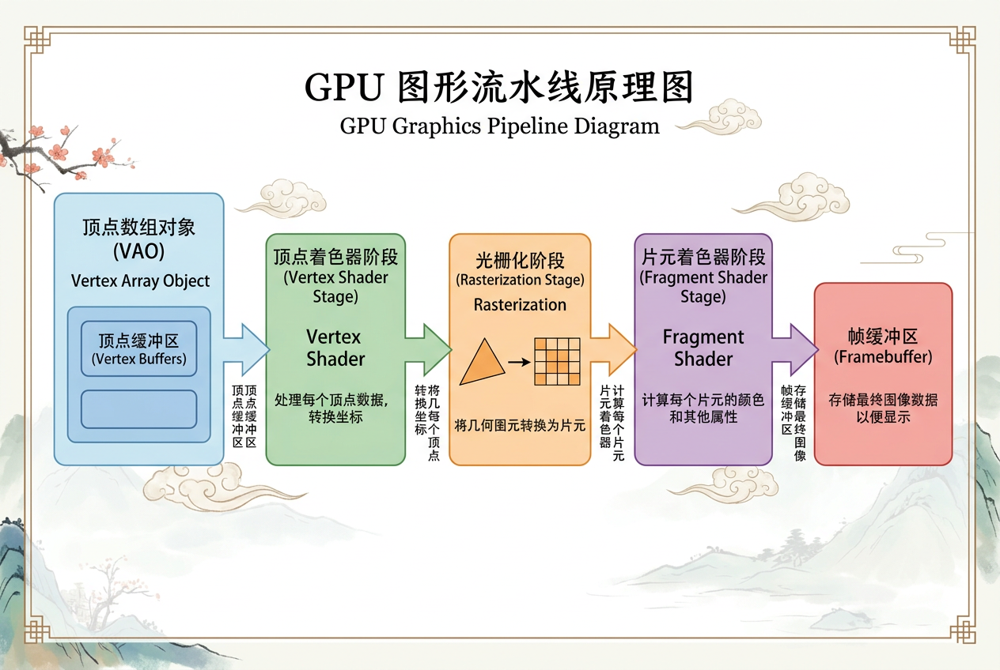

本讲义基于 Steve Marschner & Peter Shirley 所著《虎书》（Fundamentals of Computer Graphics）第5版第17章（p.479-519）图形硬件编程。
现代 GPU 编程实战——VAO/VBO、顶点/片元着色器 GLSL、纹理对象、实例化、MVP变换、面向对象封装设计、从 OpenGL 到 Vulkan 学习路线。
本版插画采用 Guizang 材质插画风格重新绘制。
in、out 和 uniform 变量机制。本书此前所有章节都在讨论光线追踪和面向软件的光栅化方法——研究如何用通用的数学表示来描述三维物体，并将这些表示转换为最终填充显示器的彩色像素。本章引入一个完全不同的范式：我们不再用 CPU 一个像素一个像素地计算，而是利用 图形硬件（Graphics Hardware）——也就是你电脑里那张显卡——来做同样的事，而且做得快得多。

生活类比：想象你在经营一家快递分拣中心。在"软件光栅化"模式下，你一个人手动识别每个包裹的目的地、计算最佳路线、打包发货。随着包裹增多，你越来越慢。而在"图形硬件"模式下，你购置了一台全自动分拣机——你把包裹按格式放上流水线，机器用成百上千个独立的机械臂同时处理它们，速度比你一个人快了上千倍。GPU 就是那台分拣机：它天生就是为"大量简单任务同时做"而设计的。
本章将逐步引导你走进 OpenGL 世界——从打开第一个窗口、绘制第一个三角形，一直到编写 Blinn-Phong 着色器、加载 3D 模型和施加纹理映射。所有代码示例均采用 OpenGL 3.3 Core Profile 版本与 GLSL 3.3，这代表了现代 OpenGL 的编程范式：完全可编程管线。
过去十年来，图形硬件（Graphics Hardware）发生了极其迅速的变化。新一代图形硬件提供了更强的并行处理能力，并更好地支持了专门化的渲染任务。这种快速迭代的一个解释是视频游戏产业及其经济驱动力——每张新显卡都意味着更强的性能和更好的处理能力，从而让视频游戏看起来更真实。
图形硬件上的处理器通常被称为 GPU（Graphics Processing Unit，图形处理单元），它们高度并行，能够同时提供数千个并发执行线程。硬件设计偏向于 吞吐量（throughput），允许更多的像素和顶点在更短的时间内得到处理。这种并行性对图形算法是天作之合，但其他领域同样受益——GPU 被用于加速物理计算、开发实时光线追踪代码、求解流体模拟中的 Navier-Stokes 方程，以及开发更快速的气候理解代码（Purcell, Buck, Mark, & Hanrahan, 2002; S. G. Parker et al., 2010; Harris, 2004）。
许多 API 和 SDK 都被开发出来以提供更直接的通用计算能力，例如 OpenCL 和 NVIDIA CUDA。硬件加速的光线追踪 API 也出现了，用于加速光线-物体的求交计算（S. G. Parker et al., 2010）。类似地，用于编写视频游戏图形组件的标准 API（如 OpenGL 和 DirectX）也提供了利用图形硬件并行能力的机制。这些 API 随着新硬件的推出不断演化以支持更复杂的计算。
想一想：CPU 和 GPU 分别适合什么类型的计算？为什么 GPU 特别适合图形渲染？提示：思考图形计算中"每个像素独立计算"的特性。
图形硬件是 可编程的（programmable）。作为开发者，你掌控着与几何处理、顶点处理以及最终成为像素的片元（Fragment）处理相关的大量计算。近期硬件的改变以及 OpenGL/DirectX API 的持续更新，共同支持了一种 完全可编程管线（completely programmable pipeline）。这些变化赋予开发者创造性地利用 GPU 计算能力的自由。在此之前，固定功能（fixed-function）的光栅化管线将计算限制为特定风格的顶点变换、光照和片元处理。管线的固定功能性确保了基本的着色、光照和纹理映射能够非常快速地完成。
无论是可编程接口还是固定功能计算，光栅化管线的基本计算流程是相似的，遵循图 17.1 所示的模式。在光栅化管线中，顶点经过观察变换和投影变换矩阵后，从局部空间变换到全局空间，最终进入屏幕坐标空间。与几何体顶点相关联的屏幕坐标被光栅化为片元。管线的最后阶段将片元处理为像素，并可以应用逐片元的纹理查找、光照以及任何必要的混合（blending）。总体而言，管线本身适合并行执行，GPU 核心可以同时处理顶点和片元。关于光栅化管线的更多细节可以在第 8 章中找到。
生活类比：你可以把可编程管线想象成一套"厨房定制服务"和"固定菜单"的区别。固定功能管线就像快餐店：你只能点菜单上有的套餐组合，出餐快但选择有限。可编程管线则像开放式厨房——告诉你每种厨具（顶点着色器、片元着色器）的位置和功能，然后你可以自由决定先做什么、后做什么、用哪些调料、不用哪些。你可以创造菜单上没有的菜，代价是需要更多前期准备。
要真正理解现代图形硬件编程，必须回顾这段技术演进的历史。在 1990 年代，图形硬件几乎完全是固定功能管线（Fixed-Function Pipeline）。开发者通过 OpenGL 1.x 的 glLight、glMaterial、glTexEnv 等 API 调用来配置硬件对顶点和像素执行何种预定义的计算——你只能"选择"，不能"编写"。例如，OpenGL 1.1（1997）提供了最多 8 个硬件光源，每个光源有固定的漫反射+镜面反射+环境光三项计算公式。这种模式下，开发效率很高但灵活性严重受限：如果你想要一种不同于 Phong 模型的光照效果（如卡通着色、皮肤散射），固定管线无能为力。
转折点出现在 2001 年——NVIDIA 发布了 GeForce 3，这是第一款支持可编程顶点着色器（Programmable Vertex Shader）的消费级 GPU。它引入了汇编级的顶点程序，允许开发者用几十条指令替代 GPU 内置的顶点变换逻辑。紧随其后，2002 年 ATI Radeon 9700 带来了第一款支持可编程像素着色器（Shader Model 2.0）的硬件。这意味着两端的"黑盒"都被打开了：你可以决定每个顶点如何变换，也可以决定每个像素如何着色。这时期诞生了许多突破性技术——法线贴图（Normal Mapping）、视差映射（Parallax Mapping）、卡通渲染（Cel Shading）——这些在纯固定管线时代是不可想象的。
2004 年的 Shader Model 3.0（NVIDIA GeForce 6800）是一次质的飞跃。它将指令数量限制从 96 条提升到 65535 条，并引入了动态分支（Dynamic Branching）——着色器终于可以像 CPU 程序一样��用 if/else 和循环。这使更复杂的光照模型（如 Cook-Torrance 的微面元模型、预计算辐射传输）能够实时运行。与此同时，OpenGL 2.0（2004）正式将 GLSL（OpenGL Shading Language）作为官方着色语言标准化——开发者不再需要写汇编级的着色器代码，C 风格的高级语言 GLSL 大大降低了门槛。
OpenGL 3.0（2008）标志着一个清理性的转折：它将大量旧式的固定功能 API 标记为"弃用"（deprecated），并在 3.2 版本引入 Core Profile——如果你声明使用 Core Profile，所有已弃用的函数都将不可用。这是 OpenGL 迈向"纯可编程"的关键一步。最终，2016 年 Khronos Group 发布了 Vulkan——一个全新的、从零设计的现代图形 API。Vulkan 不再有任何"状态机自动管理"的概念：内存分配、命令缓冲、管线状态、同步屏障——所有这些都由开发者显式控制。这使得 CPU 侧的驱动开销从 OpenGL 的毫秒级降到了微秒级，但也将学习曲线推到了前所未有的高度。现代图形编程的版图已从"单一 API"演变为多层次的选择：初学者从 OpenGL 3.3/4.x 入门理解管线概念，进阶者转向 Vulkan/Direct3D 12 追求极致性能，研究者使用 CUDA/OptiX/Metal 探索实时光线追踪。
虽然本书的重心是图形渲染，但理解 GPU 在更广义计算中的优势能帮助你建立正确的硬件直觉。CPU 和 GPU 并非"谁更强"的关系，而是"谁更适合某个任务类型"的关系。GPU 的第一大优势是大规模并行吞吐（Massively Parallel Throughput）。一个典型的高端 CPU 有 8-32 个物理核心，每个核心能在 3-5 GHz 频率下同时执行 2-4 个线程（超线程），总计约 16-128 个并发线程。而一块 NVIDIA RTX 4090 拥有 16384 个 CUDA 核心，能以约 2.5 GHz 的频率同时维持数万个活跃线程。这种数量级差距源于两种处理器根本不同的设计哲学：CPU 为"低延迟"优化——它能极快地完成单个串行任务（大缓存、分支预测、乱序执行）；GPU 为"高吞吐"优化——它用大量简单核心同时处理成千上万个数据点（图形中的顶点和片元天然满足这个条件）。
GPU 的第二大优势是专用硬件单元（Dedicated Hardware Units）。现代 GPU 不仅仅是"一大堆通用小核心"——它集成了大量为图形任务定制的专用硅片。例如，纹理单元（Texture Mapping Units, TMU）专用于纹理采样，能在单时钟周期内完成坐标过滤（双线性/三线性/各向异性）和 mipmap 级别选择。这些操作如果在 CPU 上用通用代码实现，需要数十条甚至数百条指令——但在 GPU 上几乎免费。同样，光栅化器（Rasterizer）以固定功能硬件实现三角形的片元生成和重心坐标插值，效率远超任何软件实现。最近的 GPU 架构甚至添加了光线追踪核心（RT Cores, Turing 架构引入），专用于加速光线-三角形和光线-包围盒求交计算。
GPU 的第三大优势是异步计算与隐藏延迟（Asynchronous Compute and Latency Hiding）。GPU 采用了与 CPU 完全不同的延迟处理策略。CPU 遇到缓存未命中时，会停顿等待数据从主内存加载（这在 CPU 上可能意味着 100-300 个时钟周期的浪费）。GPU 则在遇到内存访问延迟时，立即切换到另一组已就绪的线程执行——这就是 Warp/Wavefront 调度器的核心功能。只要存在足够多的活跃 Warp（称为"占用率" Occupancy），GPU 就能将内存延迟完全隐藏在计算之后。现代 GPU 还支持异步计算引擎（Async Compute Engine），允许图形渲染（Graphics Queue）和通用计算（Compute Queue）在同一块 GPU 上同时执��、互不阻塞。例如，游戏引擎可以在渲染当前帧的同时，使用计算着色器在空闲资源上预计算下一帧的阴影贴图或粒子物理模拟。
尽管 GPU 提供了巨大的计算能力，但充分利用这种能力需要跨越几道技术门槛。第一大难点是调试极度困难。CPU 程序出错时，你可以设置断点、单步执行、检查变量值——标准调试器支持这一切。但 GPU 着色器运行在显卡内部的数千个线程上，这些线程之间没有传统意义上的"程序计数器"可以同步。试图在片元着色器中设置一个断点——"在屏幕坐标 (400, 300) 处的片元上暂停"——对 GPU 而言几乎意味着整个管线必须在那个精确时刻冻结。虽然现代工具（如 NVIDIA Nsight、RenderDoc）提供了逐帧捕获和着色器调试的功能，但调试 GPU 代码的认知负担显著高于 CPU 代码。实际上，许多开发者采用一种"视觉化调试"策略——将可疑的中间值编码为颜色输出到屏幕上，通过观察颜色分布反推计算问题。本章后续展示的法向量着色器（将法向量映射为 RGB 颜色输出）就是这种策略的典型应用。
第二大难点是性能表现不可预测且难以建模。一段 GPU 着色器代码的性能不仅仅是"指令数量 × 时钟周期"这么简单。实际性能受到数十个因素的共同影响：纹理缓存的命中率（以及 2×2 片元四边形访存模式带来的特殊缓存行为）、寄存器压力（如果每个线程需要的寄存器超过硬件上限，多余的数据会"溢出"到显存中导致性能骤降）、Warp 分支发散（同一 Warp 中有线程走了 if 分支而其他线程走了 else 分支——硬件必须序列化执行两条路径）、以及 ALU 与纹理单元的占用率平衡。甚至连着色器代码的"逻辑等价重排"都可能因为编译器优化的差异而产生 2 倍以上的性能偏差。这种复杂性意味着 GPU 性能优化更接近"经验科学"而非"定理推导"——你需要使用 GPU 厂商提供的性能分析工具（如 NVIDIA Nsight Graphics、AMD Radeon GPU Profiler、Intel GPA）来精确定位瓶颈。
第三大难点是不同驱动实现之间的行为差异。虽然 OpenGL 规范严格定义了每个 API 调用的语义，但各家 GPU 厂商（NVIDIA、AMD、Intel）的驱动实现会做出不同的优化取舍。一个经典例子：未初始化纹理访问——OpenGL 规范要求纹理在第一次使用前必须完整上传数据；但某些驱动可能容错地将未初始化纹理返回黑色 (0,0,0,0)，而另一些驱动则可能返回随机显存中的遗留数据。如果你的程序不知不觉依赖了"返回黑色"的行为，它在某台机器上运行正常，在另一台上就会出现难以复现的花屏 Bug。另一个例子是着色器的编译优化程度——不同驱动对相同 GLSL 代码可能生成不同数量的指令、不同的寄存器分配方案、甚至优化掉某些"看似无用"但实际上通过副作用传递数据的变量。跨驱动测试是 GPU 程序员的必修课。
第四大难点是同步和数据依赖的复杂性。CPU 编程中，线程同步有清晰的锁、信号量、条件变量等原语。但 GPU 上的同步发生在不同的抽象层级：单个 Warp 内的线程可以通过 __shfl（shuffle）指令零延迟交换数据；同一线程块内的线程可以通过共享内存和 barrier() 同步；不同线程块之间则完全无法同步（计算着色器稍微放宽了此限制）。在图形管线中，不同阶段之间的同步是隐式的——片元着色器在光栅化完成后自动启动，但多个 draw call 之间的顺序由应用程序通过 API 调用顺���隐式控制。当你开始使用 围栏（Fence）和 同步对象（Sync Object）来协调 CPU 和 GPU 之间���执行时，一个常见的 Bug 是"GPU 尚未完成上一帧的渲染，CPU 已经开始向同一块缓冲区写入下一帧的数据"——这会导致画面闪烁和数据损坏。在 Vulkan 等显式 API 中，这种同步问题变得更加突出和基础——开发者必须显式地使用管线屏障（Pipeline Barrier）和信号量（Semaphore）来保证执行顺序。
在使用图形硬件时，将 CPU 和 GPU 区分为独立的计算实体是一种方便的思维方式。在这个语境中，术语 主机（Host）指的是 CPU 及其可用的线程和内存。术语 设备（Device）指的是 GPU（图形处理单元）及其关联的线程和内存。这很有意义，因为大多数图形硬件由通过 PCI 总线连接到机器的外部硬件组成。硬件也可能以独立芯片组的形式焊接到主板上。从这个意义上说，图形硬件代表了一种专用的 协处理器（co-processor），因为 CPU（及其核心）和 GPU（及其核心）都可以被编程。
想一想："异构多处理"（Heterogeneous Multiprocessing）为什么重要？如果 CPU 和 GPU 使用相同的内存空间，"编程图形硬件"这件事会变得简单多少？反过来，分离内存又带来了什么好处？
所有使用图形硬件的程序都必须首先建立 CPU 与 GPU 内存之间的映射关系。这是一个相当底层的细节，之所以必要，是因为驻留在操作系统中的图形硬件驱动程序需要在硬件与操作系统/窗口系统软件之间建立接口。回想一下，因为主机（CPU）和设备（GPU）是分离的，数据必须在两个系统之间进行通信。
更正式地说，操作系统、硬件驱动程序、硬件以及窗口系统之间的这种映射关系被称为 图形上下文（Graphics Context）。上下文通常通过对窗口系统的 API 调用来建立。建立上下文的细节超出了本章的范围，但许多窗口系统开发库提供了查询图形硬件各种能力并根据这些需求建立图形上下文的方法。由于建立上下文是依赖于窗口系统的，这也意味着这类代码通常不是跨平台的。不过在实践中（或者至少在入门阶段），不太可能需要编写这么底层的上下文建立代码，因为许多更高级别的 API 可以帮助你开发可移植的交互式应用程序。
许多用于开发交互式应用程序的框架都支持查询输入设备（如键盘或鼠标）。有些框架提供了对网络、音频系统和其他高级系统资源的访问。在这方面，这些 API 中很多都是开发图形应用程序甚至游戏应用程序的首选方式。
生活类比：把 CPU 和 GPU 想象成两栋相邻的大楼。CPU 大楼（主机）是总指挥部，GPU 大楼（设备）是超级计算工厂。两栋楼之间有一条高速隧道（PCI 总线）。你需要先在双方门口建立"安检通道"（图形上下文），然后才能把数据打包好、贴上标签（OpenGL 调用），通过隧道送过去。两栋楼各有各的仓库（内存），你不能径直走到 GPU 的仓库里去拿东西——必须通过 API "下单"然后等"送货"（内存复制）。
当你使用 OpenGL API 编程时，你是在为 至少两个处理器——CPU(s) 和 GPU(s) 编写代码。OpenGL 采用 C 风格的 API 实现，所有函数都以 "gl" 前缀开头，表明它们属于 OpenGL。OpenGL 函数调用改变图形硬件的状态，可用于声明和定义几何体、加载顶点着色器和片元着色器，并确定数据经过硬件时将如何进行何种计算。
本章呈现的 OpenGL 变体是 OpenGL 3.3 Core Profile 版本。虽然不是最新的 OpenGL 版本，但 3.3 版本与 OpenGL 编程的未来方向一致。这些版本专注于提升效率，同时将管线的编程完全交到开发者手中。早期 OpenGL 版本中的许多函数调用在较新的 API 中已经不存在了。
例如，立即模式渲染（Immediate Mode Rendering）已经被弃用。立即模式渲染用于在每一帧按需将数据从 CPU 内存发送到显卡内存，但对于较大的模型和复杂场景通常非常低效。当前的 API 专注于在需要之前就将数据存储在显卡上，并在渲染时实例化它。再例如，OpenGL 的 矩阵栈（Matrix Stacks）也已被弃用——开发者需要使用第三方矩阵库（如 GLM）或自己的类来创建观察、投影和变换所需的各种矩阵，正如第 7 章所介绍的那样。
因此，OpenGL 的 着色器语言（GLSL，OpenGL Shading Language）承担了更大的角色——在着色器内部执行必要的矩阵变换以及光照和着色。由于不再有执行逐顶点变换和光照的固定功能管线，程序员必须自己开发所有着色器。本章呈现的着色示例将使用 GLSL 3.3 Core Profile 版本的着色器规范。未来的读者需要参考当前的 OpenGL 和 OpenGL Shading Language 规范以获取这些 API 和语言所能支持的更多细节。
理解 GPU 的内存层次结构是编写高性能图形程序的基础。GPU 的内存系统远比 CPU 的"L1-L2-L3-主存"模型复杂，因为它需要服务成千上万个并行线程。整个层次从最快到最慢分为六个层级。最顶层是寄存器（Register），每个线程拥有独立的寄存器文件（通常是 64-256 个 32 位寄存器）。寄存器访问延迟为零时钟周期——GPU 的指令集设计确保算术操作的源操作数和结果都位于寄存器中。但寄存器是最稀缺的资源：在 NVIDIA 架构中，每个 SM（Streaming Multiprocessor，流多处理器）的寄存器文件约为 65536 个 32 位寄存器。如果一个着色器程序每个线程需要 64 个寄存器，而 SM 最多支持 2048 个线程，则寄存器不会成为瓶颈（65536 / 2048 = 32 < 64，这意味着最大并行线程数会下降）。这就是"寄存器压力"（Register Pressure）——编译器会尽力将变量打包到更少的寄存器中，但如果实在不够，就会将溢出（spill）的数据存入下一级较慢的 L1 缓存或本地内存中，导致性能骤降。
下一层是L1 缓存 / 共享内存（L1 Cache / Shared Memory）。在 NVIDIA 的 CUDA 架构中，L1 缓存和共享内存共享同一块 128KB 的片上 SRAM，可以通过配置分割（如 64KB L1 + 64KB Shared 或 32KB L1 + 96KB Shared）。共享内存可以被同一个线程块（Thread Block，最多 1024 个线程）内的所有线程访问，延迟约为 20-30 个时钟周期。在图形着色器中，共享内存（GLSL 中通过 shared 关键字声明）的用途较为有限，但在计算着色器中这是实现高性能归约、卷积等算法的关键。再往下一层是L2 缓存，这是所有 SM 共享的统一缓存（大小从几百 KB 到几 MB 不等，现代高端 GPU 可达 6-8 MB）。L2 缓存的延迟约为 100-200 个时钟周期，它的主要作用是减少对最慢层——全局显存的访问需求。
第四层是全局显存（Global Memory / VRAM），即 GPU 板上焊接的 GDDR6/GDDR6X/HBM 内存芯片。它提供巨大的容量（4GB-24GB 甚至更高）和可观的带宽（RTX 4090 的 GDDR6X 达到约 1TB/s），但延迟极高——大约 400-800 个时钟周期。这是 VBO、纹理数据、帧缓冲区等所有应用程序可见数据的最终归宿。GPU 通过内存合并（Memory Coalescing）来缓解高延迟：当同一 Warp 内的 32 个线程访问的地址落在同一个 128 字节对齐的缓存行（Cache Line）内时，硬件将它们合并为一次批量传输——这能最大化带宽利用率。如果访问模式是分散的（scattered），有效带宽可能下降 10 倍以上。
第五层是纹理缓存（Texture Cache），这是一块为纹理访问模式专门优化的只读缓存。与通用 L1/L2 缓存不同，纹理缓存针对 2D 空间局部性进行优化——当片元着色器在相邻像素上采样纹理时（这在 2×2 片元四边形中是典型模式），纹理缓存通过"分块"（Tiling）存储格式保证相邻空间的数据在缓存中也是相邻的。这就是为什么使用 sampler2D 进行纹理查找的效率远高于从全局内存直接读取一个二维数组。最后一层是常量内存（Constant Memory），专门用于存储 uniform 变量。这是一块通过广播总线连接的缓存——当 Warp 内所有线程访问同一个 uniform 地址时，数据只需读取一次然后广播给所有线程，延迟接近寄存器级别。这也是 uniform 变量对于整次 draw call 保持不变的硬件原因——如果每个线程访问不同的 uniform 地址，常量内存的优势就完全丧失。
GPU 的执行模型被称为 SIMT（Single Instruction, Multiple Threads，单指令多线程），这是对传统 SIMD（Single Instruction, Multiple Data）的扩展。在 NVIDIA GPU 上，32 个线程被绑定为一个Warp——这是硬件调度和执行的原子单位。Warp 内的 32 个线程共享同一个程序计数器（Program Counter），在任何给定的时钟周期内，它们必须执行完全相同的指令（只是操作不同的寄存器）。这个模型在 AMD GPU 上被称为 Wavefront，一个 Wavefront 通常包含 64 个线程（在 GCN 和 RDNA 架构上都是如此，但在 RDNA 中，Wavefront 被分为两个 32 线程的 Wave32 执行）。当所有 32 个线程沿着相同的执行路径前进时（例如片元着色器中的所有片元都需要执行完全相同的 Blinn-Phong 计算），SIMT 模型表现完美——32 个线程在一个时钟周期内并行执行。
问题出现在分支发散（Branch Divergence）时。考虑以下伪代码在片元着色器中运行：if (screenPos.x < 512) { doExpensiveOperation(); } else { doSimpleOperation(); }。当这个 Warp 中的 32 个片元分布在屏幕宽度 0-1024 范围内时，大约 16 个片元满足条件（x < 512），另外 16 个不满足。由于 Warp 只能执行一条指令，SM 的调度器必须序列化这两条路径——先让前 16 个线程执行 doExpensiveOperation()（此时后 16 个线程被屏蔽、空闲等待），然后再让后 16 个线程执行 doSimpleOperation()（前 16 个被屏蔽）。这导致该 Warp 的实际执行时间为两条路径之和。在极端情况下（如一个 Warp 中 32 个线程走了 32 条不同的分支），硬件可能需要 32 次序列执行——性能下降到原来的 1/32。现代 GPU 通过谓词执行（Predicated Execution）来缓解简单分支的开销：对于短 if/else 分支，编译器会计算两条路径的结果，然后用条件掩码选择最终值——这避免了实际的跳转和序列化，但增加了指令数量。
分支发散对图形着色器的影响有特定的模式。在正常的三角形光栅化中，相邻片元通常处理相似的材质和光照条件，分支发散的概率较低。但当你引入阴影映射（需要基于深度比较决定片元是否在阴影中）或复杂的材质系统（不同物体使用完全不同的着色器代码路径）时，发散的影响开始显著。一个实用的优化技巧是使用 Uniform 控制流（Uniform Control Flow）——如果一个分支条件依赖于 uniform 变量（对 Warp 内所有线程都一样），则不会有任何发散，因为所有线程必然走同一条路径。这就是为什么基于 uniform 变量的 if/else（例如"如果光照被关闭则跳过所有光照计算"）是基本免费的。
在 OpenGL 等高级 API 中，CPU 和 GPU 之间的通信时序对开发者几乎不可见——你调用 glDrawArrays，然后理所当然地假设 GPU 会在某个时刻执行它。但在底层，CPU 和 GPU 通过一种复杂的命令缓冲区（Command Buffer）机制进行异步通信。当 CPU 侧发出一个 OpenGL 调用时，驱动并不会立即触发 GPU 执行——而是将调用翻译为一系列硬件特定指令（如设置寄存器、启动 DMA 传输、发射计算任务等），打包到一个环形缓冲区（Ring Buffer）中。这是一个固定大小、循环使用的内存区域，位于 CPU 和 GPU 都可以访问的系统内存中（通过 "PCIe BAR" 映射或统一内存架构）。
环形缓冲区的操作类似于生产者-消费者模型：CPU 作为生产者，将命令压入（Push）到缓冲区的尾部并更新"写指针（Write Pointer）"；GPU 作为消费者，从头部取出（Pop）命令执行并更新"读指针（Read Pointer）"。当写指针追上读指针时（即缓冲区满了），CPU 必须等待 GPU 消耗一些命令才能继续写入——这就是 OpenGL 中的"驱动阻塞"。经典的 OpenGL 应用在连续发出大量小 draw call 后出现帧率骤降，根本原因往往是 CPU 在等待命令缓冲区的空间。这就是为什么 Vulkan 和 Direct3D 12 等现代 API 将命令缓冲区的构建（录制，Record）与提交（Submit）分离——你可以在 CPU 上预先录制一整帧的所有命令，然后一次性提交给 GPU 执行，完全消除 CPU 侧实时构建命令缓冲区的瓶颈。
围栏（Fence）是 CPU 与 GPU 之间同步的核心原语。一个典型的 OpenGL 围栏通过 glFenceSync 创建（返回一个 GLsync 对象），在 GPU 执行到该点时被"标记"。CPU 侧可以调用 glClientWaitSync 来阻塞等待 GPU 到达该同步点，或者使用 glGetSynciv 非阻塞地轮询围栏状态。这解决了上一节提到的经典问题——"CPU 在 GPU 尚未完成上一帧渲染时就重写缓冲区数据"。通过在渲染帧末尾插入围栏，然后在下一帧开始前等待围栏，可以确保数据依赖的安全性。更精细的同步则使用 管线屏障（Pipeline Barrier）——这些是在 GPU 内部执行的同步原语，确保同一 GPU 上的不同工作（如一个 draw call 的输出作为下一个 draw call 的纹理输入）按正确顺序执行。OpenGL 通过 glMemoryBarrier 和 glTextureBarrier 提供此类机制；在 Vulkan 中，屏障是显式的，且必须精确指定执行依赖（Execution Dependency）和内存依赖（Memory Dependency）——既是灵活性的代价，也是极致性能的来源。
在深入编程细节之前，回顾一下图形硬件编程的核心框架——三个基本概念：（1）缓冲区（Buffer）：设备上的一段连续内存分配，GPU 在其上进行操作；（2）状态（State）：显卡维护的一种计算状态，决定了与场景数据和着色器相关的计算如何在图形硬件上进行——更重要的是，状态可以从主机传递到设备，甚至在设备内部的不同着色器之间传递；（3）着色器（Shader）：GPU 上执行计算（逐顶点或逐片元处理）的机制。本章将聚焦于顶点着色器和片元着色器，但当前版本的 OpenGL 也包含专门的几何着色器和计算着色器。
缓冲区是图形硬件上存储数据的主要结构。它们代表了图形硬件的内部内存，与几何体、纹理和图像平面数据都有关联。就第 8 章描述的光栅化管线而言，硬件加速的光栅化计算会读取和写入 GPU 上的各种缓冲区。从编程角度来看，应用程序必须初始化 GPU 上所需的缓冲区——这本质上是一次 主机到设备的复制操作。在各个执行阶段结束时，也可以执行 设备到主机的复制，将数据从 GPU 拉回 CPU 内存。此外，OpenGL API 中还提供了将设备内存 映射到主机内存的机制，使应用程序可以直接向显卡上的缓冲区写入数据。
在图形管线中，最终的像素颜色集合可以被链接到显示器上，或者被写入磁盘作为 PNG 图像。与这些像素相关联的数据通常是一个二维的颜色值数组。数据本质上是 2D 的，但在 GPU 上被高效地表示为一维的线性内存数组。这个数组实现了 显示缓冲区（display buffer），最终会被映射到窗口中。
渲染图像的过程涉及通过图形 API 将显示缓冲区的变更传递到图形硬件。在光栅化管线的末尾，片元处理和混合阶段将数据写入输出的显示缓冲区内存。同时，窗口系统读取显示缓冲区的内容，在显示器窗口中生成光栅图像。
想一想：如果显示缓冲区的数据格式是 2D RGBA 四通道，而 GPU 以 1D 线性数组存储它，那么 GPU 如何快速地将 2D 像素坐标 (x, y) 映射到 1D 内存地址？
大多数应用程序青睐 双缓冲（double-buffered）的显示状态。这意味着与一个图形窗口关联的有两个缓冲区：前缓冲区（front buffer）和 后缓冲区（back buffer）。双缓冲系统的目的是：应用程序可以在将变更写入后缓冲区的同时，前缓冲区内存被用来驱动显示器窗口上的像素颜色。
在渲染循环结束时，两个缓冲区通过 指针交换（pointer exchange）进行切换——前缓冲区指针指向后缓冲区，后缓冲区指针则被分配为之前的前缓冲区。这样，窗口系统就能用最新版本的缓冲区刷新窗口内容。如果缓冲区指针交换与窗口系统的整个显示器刷新同步，渲染将显得流畅无瑕。否则，用户可能会在显示器上观察到 画面撕裂（tearing）现象——这是因为场景的几何体和片元的变更被处理（并写入显示缓冲区）的速度比屏幕刷新更快。
生活类比：双缓冲就像白板演示。你有一块观众（显示器）正在看的白板（前缓冲），以及一块藏在背后的备板（后缓冲）。你在备板上悄悄地擦除、重写、画新内容。写完的那一刻，你把两块板交换——观众首先看到的是完整的新内容，而不是你擦除和绘制的凌乱过程。如果没有备板（单缓冲），观众就会看到你画一半的图，这就是"画面撕裂"。
当显示器被视为一块内存缓冲区时，对它最简单操作之一就是内存设置（或复制）——将内存清零，或清除为某种默认状态。对图形程序来说，这通常意味着将窗口的背景清除为特定颜色。在 OpenGL 中将背景颜色清除为黑色可以使用以下代码：
glClearColor( 0.0f, 0.0f, 0.0f, 1.0f ); glClear( GL_COLOR_BUFFER_BIT );
glClearColor 函数的前三个参数代表红色、绿色和蓝色分量，指定范围为 [0, 1]。第四个参数代表不透明度，或称 Alpha 值，范围从 0.0（完全透明）到 1.0（完全不透明）。Alpha 值在管线的最后阶段通过各种片元混合运算来确定透明度。
该操作仅清除颜色缓冲区。除了通过 GL_COLOR_BUFFER_BIT 指定的颜色缓冲区在本例中被清除为黑色之外，图形硬件还使用一个 深度缓冲区（depth buffer）来表示片元相对于摄像机距离的远近（你可能还记得第 8 章中对 z-buffer 算法的讨论）。清除深度缓冲区是确保 z-buffer 算法正常运作、实现正确隐藏面消除的必需步骤。可以通过对两个位字段值进行"或"运算来同时清除颜色缓冲区和深度缓冲区：
glClear(GL_COLOR_BUFFER_BIT | GL_DEPTH_BUFFER_BIT);
在一个基本的交互式图形应用程序中，以上清除步骤通常是处理任何几何体或片元之前执行的第一项操作。
数据在图形管线中流动时，其格式和语义在每个阶段都发生根本性的变化——理解这些转换对于调试和优化至关重要。管线入口接收的是顶点流（Vertex Stream）——一系列独立的顶点，每个顶点携带位置、法向量、纹理坐标等属性。这些顶点在 CPU 端以结构体数组的形式定义（如 glm::vec3 pos + glm::vec3 normal + glm::vec2 texCoord），通过 VBO 上传到 GPU 显存中。在管线内部，顶点着色器以 SIMD 方式并行处理它们——每个顶点进入顶点着色器的一个独立调用，输入是当前顶点的各个属性，输出是一个齐次坐标位置（gl_Position）和任意中间数据（通过 out 变量）。此时，数据的物理意义仍然是"顶点"——离散空间中的采样点。
在顶点着色器之后，图元装配（Primitive Assembly）阶段将离散的顶点组装为几何图元：三个顶点构成一个三角形，两个顶点构成一条线段，或者单个点。这是数据格式的第一次重大转变：从"独立顶点"变为"图元"——具有拓扑关系（哪些顶点构成一个三角形）和几何覆盖范围（三角形内部的所有点）的更高层对象。图元装配还负责背面剔除（Back-Face Culling）：根据图元在屏幕上的缠绕顺序（顺时针/逆时针），将不可见的面（如物体背面）从管线中丢弃，避免后续阶段浪费计算资源。
接下来，裁剪（Clipping）阶段将图元与视见体（View Frustum）进行比较，对于部分在视见体内部分在外的三角形，裁剪器会生成新的顶点并重新三角化——这个过程涉及在齐次坐标空间中进行插值和交点计算。裁剪后的图元进入透视除法（Perspective Division）和视口变换（Viewport Transform）——这步将齐次坐标 (x, y, z, w) 归一化到 [-1, 1] 的 NDC（Normalized Device Coordinates）空间，然后映射到实际窗口的像素坐标。至此，3D 的图元被"压平"到 2D 屏幕空间。
然后是光栅化（Rasterization）——第二次重大格式转变：从"图元"变为"片元"。光栅化器遍历图元覆盖的每个屏幕像素位置，为每个位置生成一个或多个片元（Fragment）——片元是一个"候选像素"，携带其在屏幕上的整数坐标、插值后的深度值和所有逐顶点属性的重心坐标插值结果。一个三角形可能生成数百个片元（取决于它在屏幕上覆盖的像素数），每个片元都是一个独立的待处理单元。最后，这些片元经过片元着色器（可能还包括混合阶段的 alpha 测试、模板测试和深度测试）后，通过写入帧缓冲区的颜色附件转变为像素——屏幕上实际可显示的颜色值。理解这个数据流转变链条（顶点→图元标注→片元→像素）对理解整个管线的行为至关重要。
虽然是"完全可编程管线"，但现代 GPU 管线中并非所有阶段都是可编程的。以下对比表精确展示了哪些阶段是由开发者编写的着色器控制的（可编程），哪些是由硬件固定实现的（固定功能）：
| 管线阶段 | 类型 | 可编程内容 | 输入数据格式 | 输出数据格式 | 典型计算 |
|---|---|---|---|---|---|
| 顶点着色器 | 可编程 | 完整的 GLSL/HLSL 代码 | 逐顶点属性（in） | 齐次坐标 + 中间插值变量（out） | MVP 变换、骨骼动画、逐顶点光照 |
| 曲面细分控制/评估 | 可编程 | 完整着色器代码（可选阶段） | 补丁控制点 | 细分后的新生成顶点 | 动态 LOD、位移映射、地形细化 |
| 几何着色器 | 可编程 | 完整着色器代码（可选阶段） | 完整图元 | 零个或多个图元 | 粒子扩展、阴影体积、单 pass 立方体贴图 |
| 图元装配 | 固定功能 | 无——硬件自动执行 | 变换后的顶点 | 图元（三角形/线段/点） | 组合顶点为图元、背面剔除判断 |
| 裁剪 | 固定功能 | 无——硬件自动执行 | 齐次坐标图元 | 裁剪后的图元 | 与视见体求交、生成新顶点 |
| 透视除法与视口映射 | 固定功能 | 无——硬件自动执行 | 裁剪坐标 | NDC + 屏幕坐标 | 除以 w、缩放平移 |
| 光栅化 | 固定功能 | 无——硬件固定逻辑 | 屏幕空间图元 | 片元（位置+插值属性） | 遍历像素、重心坐标插值 |
| 片元着色器 | 可编程 | 完整 GLSL/HLSL 代码 | 插值后的逐顶点属性（in） | 颜色值（out） | 纹理采样、光照计算、法线贴图 |
| 逐片元操作 | 可配置的固定功能 | 仅可配置（非编写程序） | 片元着色器输出的颜色+深度 | 帧缓冲区中的像素 | 深度测试、模板测试、混合运算 |
这个对比表揭示了一个重要的设计原则：现代 GPU 将"创造性计算"（顶点变换、片元着色、几何生成）交给可编程的阶段，而将"机械性操作"（图元装配、裁剪、光栅化、深度测试）留在固定功能硬件中。这样做的原因是，机械性操作的算法是确定性的、经过数十年研究优化的，由硬件实现可以达到极致效率（光栅化器可以在单时钟周期内判断一个像素是否在三角形内部——软件实现需要数十条指令）。而着色器程序的可变性（不同的光照模型、不同的纹理混合方式）要求灵活性——硬件无法预知所有可能的计算需求。
在标准的光栅化管线中，片元着色器执行之后才进行深度测试（Late-Z）——这意味着大量片元着色器的计算结果最终因为深度测试失败而被丢弃（overdraw，过度绘制）。如果一个场景从前向后渲染（先渲染远处的山、再渲染近处的房子、最后渲染角色），后渲染的物体覆盖了之前的结果——大量运算被浪费。为了缓解这个性能问题，现代 GPU 实现了 Early-Z（也称为 Early Depth Test，提前深度测试）。Early-Z 的核心思想很简单：在片元着色器执行之前，先检查片元的深度值是否可能被接受。如果该片元的深度大于当前深度缓冲区中该位置已有的深度值（默认的 GL_LESS 测试），则该片元必然被遮挡——可以跳过整个片元着色器的执行，直接丢弃片元，节省所有纹理采样和算术运算。
然而，Early-Z 有一个关键的技术限制：它要求片元着色器不能修改深度值（即不能在着色器中写入 gl_FragDepth）。原因是硬件无法在着色器运行之前知道"最终深度值会是多少"——如果着色器可能修改它，Early-Z 的判断就不可靠。当检测到片元着色器��入 gl_FragDepth 时，GPU 驱动器会自动禁用 Early-Z 优化，退回到先执行着色器再进行深度测试的经典路径。另一个导致 Early-Z 失效的操作是在片元着色器中使用 discard 指令——discard 会完全丢弃当前片元（不写入颜色也不更新深度缓冲区），但如果 Early-Z 已经在着色器之前更新了深度缓冲区，discard 就无法撤销这次写入，导致错误。因此，使用 discard 的片元着色器也会强制 GPU 退回到 Late-Z 模式。
比 Early-Z 更高一个层次的深度优化是 Depth-Bounds Test（深度边界测试）。这个测试作用于一个完整的屏幕空间区域（通常是一个网格块），而非单个片元。GPU 将屏幕划分为固定大小的瓦片（Tiles，如 16×16 像素），在光栅化之前就检查该瓦片的深度范围是否与当前深度缓冲区中的对应范围有交集。如果整个瓦片中的片元深度都大于该区域已有的最大深度（被完全遮挡），整个瓦片都可以跳过——不仅跳过片元着色器，连光栅化和顶点着色器的属性插值也一并跳过。这种层次化（Hierarchical）的深度剔除是现代 GPU（尤其是 PowerVR 等基于 Tile-Based Rendering 的移动 GPU）实现高能效的关键技术。在桌面端 GPU 上，NVIDIA 从 Maxwell 架构开始引入了类似的 Tiled Caching 机制，先将场景光栅化到片上 SRAM 瓦片中，再在瓦片内执行 Early-Z 和片元着色并进行深度/颜色写回——这大幅减少了全局显存的带宽消耗，这是移动 GPU 多年来一直采用的做法在桌面端的迁移。
通过展示显示器颜色缓冲区和深度缓冲区的清除操作，图形硬件 状态（state）的概念也随之被引入。glClearColor 函数设置了一组默认的颜色值——当 glClear 被调用时，这些值会被写入颜色缓冲区中的所有像素。清除调用初始化了显示缓冲区的颜色分量，也可以重置深度缓冲区的值。如果应用程序不改变清除颜色，清除颜色只需要设置一次——通常这是在 OpenGL 程序初始化时就完成的。每次调用 glClear 时，都会使用之前设定好的清除颜色状态。
此外，z-buffer 算法的状态可以根据需要开启和关闭。在 OpenGL 中，z-buffer 算法也被称为 深度测试（depth test）。启用深度测试后，在将任何片元颜色写入颜色缓冲区之前，片元的深度值会与当前存储在深度缓冲区中的深度值进行比较。有时深度测试并非必需，它甚至可能会拖慢应用程序。禁用深度测试会阻止 z-buffer 计算并改变可执行程序的行为。使用 OpenGL 启用 z-buffer 测试的方式如下：
glEnable(GL_DEPTH_TEST); glDepthFunc(GL_LESS);
glEnable 调用开启了深度测试，而 glDepthFunc 调用则设置了深度比较的方式。本例中将深度函数设为其默认值 GL_LESS，用以说明其他状态变量也存在且可以被修改。glEnable 的反操作是 glDisable。
想一想：为什么 OpenGL 被设计为一个"状态机"而不是无状态的函数调用？状态机模型对 GPU 上的硬件优化有什么帮助？
OpenGL 中状态的概念模仿了面向对象类中静态变量的用法。程序员根据需要开启、关闭和/或设置驻留在显卡上的 OpenGL 变量状态。这些状态随后会影响硬件上所有后续的计算。总的来说，高效的 OpenGL 程序会尽量减少状态变化的次数——只开启那些需要的状态，同时关闭渲染不需要的状态。
生活类比：OpenGL 的状态机就像一台专业咖啡机。你在开始时设置豆子种类（颜色）、研磨粗细（深度测试方式）、水温（混合模式）——这些都是机器的"状态"。之后，你只需要按"开始"按钮（Draw Call），机器就会根据之前设定的状态自动制作咖啡。如果你每做一杯就重新设置一遍所有参数，那效率当然就低了。高效的 GPU 编程原则就是：尽量少改状态，改完一批对象统一渲染。
OpenGL 维护了一个庞大而精密的状态系统。从逻辑上可以将这些状态归类为 12 个功能域，每个域控制管线的不同方面。理解这些分类不仅有助于记忆 API，也能帮助你在性能调优时快速识别相关的状态变更。
glEnable(GL_BLEND)、glBlendFunc（设置源和目标混合因子，如 GL_SRC_ALPHA 和 GL_ONE_MINUS_SRC_ALPHA）、glBlendEquation（设置混合运算符，如加法 Add、减法 Sub、最大值 Max）。混合是实现透明效果（如玻璃、烟雾）的关键状态。glEnable(GL_DEPTH_TEST)、glDepthFunc（比较函数：GL_LESS 为默认，GL_LEQUAL 用于天空盒等）、glDepthMask（控制是否写入深度缓冲区——关闭写入常用于后续 pass 的透明物体渲染）。glStencilFunc、glStencilOp、glStencilMask。模板测试发生在深度测试之前，可以将片元操作限定在特定形状区域内。glEnable(GL_SCISSOR_TEST)、glScissor（定义像素矩形区域，限制渲染在该区域内）、glEnable(GL_CLIP_DISTANCE0)（启用着色器中的自定义裁剪平面）。Scissor Test 比 Clipping Plane 更底层，在光栅化级别工作。glViewport（定义起始像素位置和宽高）、glDepthRange（定义深度值的映射范围，通常为 [0, 1] 但在正交透视中可能有不同的设置）。视口参数内置于光栅化器的硬件逻辑中。glFrontFace（定义 CCW 或 CW 为正⾯）、glCullFace（指定剔除背面还是正面）、glPolygonMode（线框、填充或点模式）、glPolygonOffset（用于防止 z-fighting 的偏移量，常在阴影贴图渲染中应用）。glUseProgram、所有 glUniform* 系列函数。Uniform 变量的值实际上也是"着色器程序状态"的一部分——它们随着绑定不同的着色器程序而切换。glActiveTexture（切换纹理单元）、glBindTexture（将纹理对象绑定到当前纹理单元）、glTexParameteri（设置各种纹理参数）。OpenGL 要求先通过 glActiveTexture 选定纹理单元，才能对该单元调用其他纹理操作。glBindFramebuffer。默认的帧缓冲区（句柄 0）直接对应窗口客户区，应用程序创建的帧缓冲区对象（FBO）对应离屏渲染目标（如渲染到纹理、延迟渲染的 G-Buffer 等）。帧缓冲区还控制颜色附件、深度附件和模板附件的绑定。glBindVertexArray、glEnableVertexAttribArray、glVertexAttribPointer。VAO 是所有 VBO 元数据状态的汇总容器，绑定不同的 VAO 会立即切换整组顶点布局配置。glEnable(GL_MULTISAMPLE)（多重采样抗锯齿 MSAA）、glEnable(GL_LINE_SMOOTH) 或 glEnable(GL_POLYGON_SMOOTH)（软件平滑，性能代价大）、glPointSize 和 glLineWidth（控制点和线的光栅化尺寸）。需要注意的是，glLineWidth 在现代驱动中通常被限制为 1.0（大于 1 的行宽在许多实现中已废弃）。并非所有的 OpenGL 状态变更都是等价的——某些状态切换几乎可以忽略不计，而另一些则可能触发 GPU 管线刷新（Pipeline Flush）——这相当于强制 GPU 完成所有排队的工作之后才能继续，是性能的头号杀手。以下层级表基于现代 GPU 架构的实测经验总结：
| 代价层级 | 典型操作 | 性能影响 | 原因 |
|---|---|---|---|
| 几乎免费 | glUniform*（设置 uniform 变量值）、glBindVertexArray（切换 VAO）、glBindBuffer（切换 VBO） | 纳秒级，驱动仅更新内部指针 | 这些调用只改变 CPU 侧驱动维护的"待提交状态表"，不涉及 GPU 硬件寄存器的实时写入 |
| 便宜 | glBlendFunc、glDepthFunc、glCullFace（改变单一的管线行为参数） | 微秒级，硬件寄存器写入 | 仅需更新一个 GPU 硬件寄存器，不会触发管线刷新或缓存失效 |
| 中等 | glUseProgram（切换着色器程序）、glBindTexture（绑定不同的纹理对象） | 微秒级，可能触发指令缓存刷新 | 着色器切换需要 GPU 加载新的着色器二进制代码到指令缓存；纹理切换可能需要纹理缓存的局部失效 |
| 昂贵 | glBindFramebuffer（切换渲染目标/离屏缓冲）、glTexImage2D（上传纹理数据） | 毫秒级，GPU 管线刷新 + 带宽消耗 | 切换 FBO 要求 GPU 完成对当前渲染目标的所有 pending 写操作；纹理上传涉及主机到设备的 DMA 传输 |
| 极昂贵 | glBufferData（重新分配缓冲区并上传数据）、glCompileShader/glLinkProgram、glReadPixels（从 GPU 读回数据） | 毫秒到数十毫秒，GPU 停止（Stall） | 缓冲区重新分配可能在 GPU 使用该缓冲区时导致等待；着色器编译在驱动层执行复杂优化；读回操作要求 PCIe 总线反向传输并强制 CPU-GPU 同步 |
这个性能层级表揭示的核心原则是：以频率最低的可能方式变更昂贵状态。一个经典的优化策略是"按状态排序"（State Sorting）——将场景中所有使用相同着色器程序的物体放在一起渲染（减少 glUseProgram 切换），再在每组内按纹理对象进一步分组（减少 glBindTexture 切换），依此类推。这比"遍历场景树、随到随画"的自然编码方式能提升 2-10 倍的 draw call 效率。
状态泄漏是 OpenGL 编程中最隐蔽的一类 Bug——��发生在前一个渲染步骤遗留的 GPU 状态意外地影响了后续的渲染操作。因为状态机的本质就是"设置即持续生效"，如果某个子系统在启用深度测试后忘记关闭、某个材质设置了高指数的 Phong 幂但未在新物体上重置，就会产生难以追踪的视觉错误。最常见的状态泄漏场景之一是混合状态残留：在渲染半透明玻璃面板时启用了 GL_BLEND 并设置了特定的混合函数，然后在后续的不透明物体循环中忘记调用 glDisable(GL_BLEND)——结果所有不透明物体都出现了意外的半透明效果，且由于 z-buffer 未正确更新（透明物体通常关闭深度写入），还可能导致深度排序错误。
另一个经典的泄漏场景涉及着色器程序与 uniform 变量不一致：开发者可能在程序 A 中设置了 phongExp uniform 为 32（高光锐利），然后切换到程序 B（Blinn-Phong 变体），忘记重新设置该 uniform。如果 B 保留了 A 设置时的残留值，视觉表现就会出现不一致——这个 Bug 尤其危险，因为它不会导致崩溃或黑屏，而只是"看起来不太对"。更隐蔽的泄漏涉及纹理单元绑定：在某个渲染路径中将纹理绑定到 GL_TEXTURE1 后，如果后续路径的着色器也引用了纹理单元 1 但忘记更新其内容，就会采样到错误的纹理数据。由于着色器中的采样器类型是 uniform，编译器无法检查绑定的纹理与着色器预期是否匹配。
防御状态泄漏的最佳实践包括：(1) RAII 状态封装——将每组渲染操作需要的状态"推入"（Push）和"弹出"（Pop）用 C++ 构造/析构函数或 scope guard 实现，确保无论函数如何返回，状态都会被恢复。例如：ScopedDepthTest dt(true, GL_LESS); 在构造时保存当前深度状态并按需启用/设置，在析构时自动恢复之前的状态。(2) "全量设置"惯例——在每次 rendering pass 开始时显式设置该 pass 需要的所有关键状态，而不是依赖"默认值"或"上一次设置的值"。这在多 pass 渲染管线（如延迟着色、后处理链）��尤其重要。(3) 使用调试工具——RenderDoc 的 API 调用列表可以逐帧查看所有状态变更，通过对比"预期状态"与"实际状态"快速锁定泄漏点。(4) 启用 OpenGL 调试输出——通过 glEnable(GL_DEBUG_OUTPUT) 和注册调试回调函数，驱动会向你报告潜在的状态错误、性能警告和已弃用 API 的使用情况，这对捕捉泄漏有极大帮助。
一个简单而基本的 OpenGL 应用程序，其核心是一个 显示循环（display loop），它要么以尽可能快的速度被调用，要么以与显示器或显示设备刷新率一致的速度被调用。下面的循环示例使用了 GLFW 库，该库支持跨多个平台进行 OpenGL 编码：
while (!glfwWindowShouldClose(window))
{
// OpenGL 代码在此处调用，
// 每次执行此循环时执行。
glClear(GL_COLOR_BUFFER_BIT | GL_DEPTH_BUFFER_BIT);
// 交换前后缓冲区
glfwSwapBuffers(window);
// 轮询事件
glfwPollEvents();
if (glfwGetKey( window, GLFW_KEY_ESCAPE ) == GLFW_PRESS)
glfwSetWindowShouldClose(window, 1);
}
该循环被紧凑地约束，仅在窗口打开期间运行。此示例循环基于之前设置的（或默认的）值，在图形硬件内存中重置颜色缓冲区值和 z-buffer 深度值。输入设备——如键盘、鼠标、网络或其他交互机制——在循环的末尾被处理，以改变与程序相关的数据结构状态。glfwSwapBuffers 调用将图形上下文与显示器刷新同步，执行前后缓冲区之间的指针交换，使得更新后的图形状态显示在用户的屏幕上。缓冲区的交换发生在所有图形调用发出之后。
虽然概念上是独立的，深度缓冲区和颜色缓冲区通常被统称为 帧缓冲区（framebuffer）。通过清除帧缓冲区的内容，应用程序可以继续发出更多 OpenGL 调用，将几何体和片元推入图形管线。帧缓冲区直接与包含图形上下文的窗口大小相关。OpenGL 需要窗口（或称 视口，viewport）的尺寸，以便在硬件内部构建 Mvp 矩阵（来自第 7 章）。这可以通过以下代码来完成——此处再次使用 GLFW 工具包演示，它提供了查询所请求的窗口（或帧缓冲区）尺寸的函数：
int nx, ny; glfwGetFramebufferSize(window, &nx, &ny); glViewport(0, 0, nx, ny);
在本例中，glViewport 将 OpenGL 的窗口尺寸状态设置为 nx 和 ny（分别作为窗口宽高），视口的起始位置在原点。从技术上说，OpenGL 将数据写入帧缓冲区内存是光栅化几何体并处理片元这一系列操作的结果。这些写入发生在像素显示在用户显示器上之前。
想一想：如果你在 glClear 和 glfwSwapBuffers 之间写入绘制代码，但什么也没画出来——可能的错误有哪些？逐条思考：VBO 是否正确绑定？VAO 是否正确设置？着色器是否已链接？
这两种绘制命令代表了完全不同的数据组织策略，性能差距在大型网格上可达 2-5 倍。glDrawArrays 以顺序驱动的方式工作——它从当前绑定的 VBO 中连续读��顶点 0、1、2 构成第一个三角形，然后读取顶点 3、4、5 构成第二个三角形，依此类推。在这种模式下，每个三角形是一组全新的顶点——即使相邻三角形共享顶点（如网格中常见的顶点被周围 6 个三角形共用），glDrawArrays 也会在 VBO 中存储该顶点的 6 个完整副本。以一个 100 万顶点的三角网格为例——如果每个顶点平均被 6 个三角形共享，glDrawArrays 需要存储 600 万份顶点数据（每份包含位置、法向量、纹理坐标共 32 字节），即约 192 MB。相比之下，glDrawElements 使用一个索引缓冲区（Element Buffer Object, EBO）来间接引用顶点——VBO 中仅存储 100 万份唯一的顶点数据（32 MB），而 EBO 中存储 600 万个索引（使用 GL_UNSIGNED_SHORT 时为 12 MB，使用 GL_UNSIGNED_INT 时为 24 MB）。总内存占用从 192 MB 降至 44-56 MB。
内存带宽的节省是主要收益，但更深层的性能优势来自后变换顶点缓存（Post-Transform Vertex Cache）。这是 GPU 内部的一块小型缓存（通常 16-32 个顶点），存储最近被顶点着色器处理后的顶点结果。当 glDrawElements 通过索引重复引用同一个顶点时（如三角形 ABC 之后是三角形 BCD——B 和 C 被缓存命中），GPU 直接从后变换缓存中读取已经变换过的顶点数据，完全跳过顶点着色器的重新执行。缓存命中率的典型值在良好网格上可达 50-80%——这意味着最多一半的顶点着色计算可以被省掉。而 glDrawArrays 的每个顶点只被引用一次（即使它代表空间中的同一个点），后变换缓存永远无法命中。这是效率差距的根本来源。顶点缓存优化（Vertex Cache Optimization）——重新排列索引缓冲区的顺序以最大化缓存命中——是一个完整的算法研究子领域，如 Tom Forsyth 的经典算法至今仍在游戏引擎中广泛使用。
除了独立三角形（GL_TRIANGLES），图形硬件还提供了三角形条带（Triangle Strip, GL_TRIANGLE_STRIP）和三角形扇（Triangle Fan, GL_TRIANGLE_FAN）两种优化的图元拓扑。三角形条带的工作方式是：前三个顶点构成第一个三角形，之后每新增一个顶点就与前两个顶点构成一个新三角形。因此，渲染 N 个三角形只需要 N+2 个顶点而不是 3N 个——数据量减少了约三分之二。这对于连接面（如地形网格的行、圆柱体的侧面）非常高效。但三角形条带面临一个实际问题：如果网格中存在不连续区域（如模型的脖子和肩膀之间），就不能用单一条带连续表达全部几何体。
解决这个问题的技巧是使用退化三角形（Degenerate Triangles）——一种面积为 0 的三角形，硬件会自动跳过其光栅化。通过在条带中插入重复顶点（如 ...ABCDDEEFG...），可以创造出一个"逻辑跳跃"——三角形 CDD、DDE、DEE、EEF 的面积都是 0（因为至少有两个顶点重合），不会产生任何片元。带退化三角形的连接不会打断后变换缓存——实际上这是 NVIDIA 在早期文档中推荐的场景批量合并方法。OpenGL 3.1 开始引入了更优雅的图元重启索引（Primitive Restart Index）——通过在 EBO 中插入一个特殊值标记（通常为最大索引值，如对 GL_UNSIGNED_SHORT 是 0xFFFF），告诉 GPU "从此处开始是一个新的独立条带"。相比之下，三角扇在现代 OpenGL 中使用较少——它以一个中心顶点为枢纽，后续每对顶点构成一个三角形，适合表达圆锥、圆顶等放射状几何体。但从 OpenGL 3.3 开始，独立三角形配合索引缓冲区已成为最通用和最推荐的形式。
传统绘制命令的参数（如顶点数量、起始偏移、实例数量等）必须由 CPU 在每次调用时指定。但对于某些场景——如 GPU 端执行的遮挡剔除（Occlusion Culling）——CPU 并不知道最终有多少物体是可见的。如果 CPU 需要从 GPU 读回遮挡查询结果（glGetQueryObjectuiv）、然后基于结果决定绘制什么，中间会有严重的同步延迟（GPU 必须完成所有排队工作才能执行读回）。间接绘制（Indirect Draw, glDrawArraysIndirect / glDrawElementsIndirect）解决了这个问题——绘制命令的参数不必在调用时指定，而是从 GPU 内存中的一个缓冲区对象中读取。这意味着之前的计算着色器或变换反馈阶段可以在 GPU 上直接生成这些参数。
粒子系统是间接绘制的经典应用场景：CPU 设置初始的粒子发射参数，然后将粒子更新和模拟完全交给计算着色器。计算着色器不仅更新每个粒子的位置和生命周期，还将存活粒子的数量写入一个 GPU 缓冲区作为 glDrawArraysIndirect 的 count 参数。随后的绘制调用直接从 GPU 内存读取这个 count 值——CPU 完全不知道渲染了多少粒子。这实现了真正的"零 CPU 干预 GPU 驱动管线"。另一个应用是GPU 驱动的实例化——将多个不同物体的实例数据（变换矩阵、材质索引等）打包到一个 SSBO（Shader Storage Buffer Object）中，由 GPU 根据可见性自行填充，然后通过 glDrawElementsIndirect 批量渲染，大幅减少 draw call 数量。这也是 Vulkan 中"命令缓冲区 GPU 端录制"（Device-Generated Commands）概念在 OpenGL 中的预演。
与显示缓冲区的概念类似，几何体信息也通过使用数组来指定——存储顶点数据以及其他顶点属性，如顶点颜色、法向量，或者着色所需的纹理坐标。缓冲区的概念将再次被用来在图形硬件上分配存储空间，并将数据从主机传输到设备。
图形硬件编程的挑战之一是对 3D 数据的管理，以及它们与图形硬件内存之间的往返传输。大多数图形硬件处理特定种类的几何图元（geometric primitives）。这些不同的图元类型利用图元的简单性来换取图形硬件上的处理速度。更简单的图元有时可以被极快地处理。但需要注意的是，图元类型需要足够通用，以便对从非常简单到极其复杂的各种几何体进行建模。在典型图形硬件上，图元类型仅限于以下一种或多种：
这三种图元类型构成了大多数可定义几何体的基本构建单元。一个使用 OpenGL 渲染的三角形网格示例如图 17.2 所示。
生活类比：图形图元就像乐高积木的"零件类型"。乐高工厂只生产有限的几种零件（砖块、横梁、齿轮），但这有限的种类足以搭建教堂、城堡、宇宙飞船等任意复杂的作品。同样，图形硬件只理解点、线、三角形这三种"积木类型"��—但它们的组合足以呈现《阿凡达》中的潘多拉星球。甚至 NURBS 曲面这些数学上光滑的表面，最终也要被"切成"无数细小三角形才能送入图形管线。
现代 OpenGL 的顶点数据管理经历了三次重大升级，每一层都解决了对应的问题。OpenGL 1.1（1997）实现了最基本的绘制方式——立即模式（Immediate Mode）：在 glBegin(GL_TRIANGLES) 和 glEnd() 之间，用 glVertex3f、glNormal3f、glTexCoord2f 等调用逐顶点地"描述"几何体。每帧渲染都重新从 CPU 内存将这些数据通过 PCI 总线发送到 GPU——对于包含数十万三角形的场景，这很快就成为带宽瓶颈。OpenGL 1.5（2003）引入了 VBO（Vertex Buffer Object），提供了一个关键的概念飞跃：数据可以预先存储在 GPU 显存中，之后每帧只需要一条"从这个缓冲区里画"的命令，无需重复传输数据。这本质上是将"流式处理"升级为"缓存处理"。
然而，VBO 只解决了"数据存在哪"的问题，没有解决"数据如何被解释"的问题。一个 VBO 只是一片连续的字节——GPU 不知道哪些字节是顶点位置、哪些是法向量、哪些是纹理坐标。在 VBO 时代（OpenGL 1.5 到 3.0），这需要在每次绘制前通过 glVertexPointer、glNormalPointer、glTexCoordPointer 等函数重新告知 GPU 数据的布局——即使绘制的是同一个 VBO，每次绑定时都需要重新配置。OpenGL 3.0（2008）引入了 VAO（Vertex Array Object），将这些"格式描述"打包为一个持久化的对象。你现在可以：创建 VAO 一次，在其中设置好所有属性指针和启/禁用状态，之后每次绘制时只需 glBindVertexArray(vao)——一步恢复整个顶点布局配置，而不是重复调用 5-6 个不同的 API 函数。
在 VAO 之前，EBO（Element Buffer Object，索引缓冲区）就已经存在于 VBO 时代（通过 GL_ELEMENT_ARRAY_BUFFER 目标绑定）。但关键的设计决定发生在 OpenGL 3.3——EBO 的绑定被封装进了 VAO 的内部状态。这意味着：绑定一个 VAO 不仅恢复了顶点数据的布局，还自动关联了使用哪个索引缓冲区。没有这个设计，切换不同的几何体时需要分开恢复 VBO 布局和 EBO 绑定——这是两个可能脱节的步骤。三者的最终关系可以概括为：VBO 存数据，EBO 记录引用关系（顶点共享），VAO 封装"如何解释这些数据并在绘制时激活它们"的全部元信息。
当你在 VBO 中存储顶点数据时，面临一个关键的布局决策：将所有属性交错排列（Interleaved）——如 [pos, normal, texCoord, pos, normal, texCoord, ...]——还是使用分离的缓冲区（Separate Buffers）——一个 VBO 存储所有位置，另一个存储所有法向量，第三个存储所有纹理坐标。这个选择深刻地影响着 GPU 的内存访问模式。交错布局的优势在于空间局部性——当 GPU 处理顶点 0 时，它的位置、法向量和纹理坐标在内存中紧密相邻，可能在同一个缓存行（64-128 字节）内被一次性加载。对于"在顶点着色器中需要同时访问位置和法向量"（如 Blinn-Phong 顶点着色器计算半向量时），交错布局能最大化 L1/L2 缓存命中率。
分离缓冲区的优势则体现在不同的使用场景中：如果你的渲染管线需要多 pass 处理——例如一个 pass 只需要顶点位置做阴影贴图渲染，另一个 pass 需要位置+法向量+纹理坐标做完整着色——分离式布局可以让 GPU 在阴影 pass 中只加载位置数据所在的缓冲区，避免将无关的法向量和纹理坐标数据也拖入缓存（这些无用数据污染了缓存行，降低了有效带宽）。另一个分离式的优势是更新灵活性——如果法向量在每帧通过骨骼动画重新计算，但纹理坐标固定不变，你可以将位置和法向量放在一个动态更新的 VBO 中（GL_DYNAMIC_DRAW），而纹理坐标放在另一个静态 VBO 中（GL_STATIC_DRAW），避免每帧重新传输不变的数据。
在实务中，对于大多数交互式图形应用，交错布局是更安全和高性能的默认选择。现代 GPU 的缓存行大小足够容纳一个交错的完整顶点（例如 3×vec3 + 1×vec2 = 11 个 float = 44 字节，远小于典型的 128 字节缓存行）。只有在以下情况下才考虑分离式：(1) 顶点数据的某些属性从不被着色器使用（如某些材质不需要法向量），可以避免加载无效数据；(2) 不同属性有不同的更新频率；(3) 需要在计算着色器中单独处理某个属性流（如粒子物理只更新位置）。
EBO 中索引的数据类型选择看似微不足道（一个 uint16 vs 一个 uint32），但对于大型网格，这直接影响带宽消耗和顶点缓存行为。GL_UNSIGNED_SHORT（16 位无符号整数）每个索引占用 2 字节，能索引 0-65535 号顶点。如果你的模型有 50,000 个顶点和 150,000 个三角形，EBO 使用 uint16 时大小为 150000 × 3 × 2 = 900 KB——几乎可以忽略。使用 GL_UNSIGNED_INT（32 位）则 EBO 变为 1.8 MB——依然很小，但确实翻倍。当顶点数超过 65,535 时，uint16 就不够了——必须全面切换到 uint32。
然而，不必将整个 EBO 统一为一种类型。对于大型场景中既有小物体（如道具、石头）又有大物体（如地形网格）的情况，可以在不同 VAO 中使用不同的索引类型——小物体的 EBO 使用 GL_UNSIGNED_SHORT，大地形使用 GL_UNSIGNED_INT。GPU 硬件对 16 位索引访问有专门的优化路径——索引缓存（Index Cache）针对较窄的整数类型有更高命中率。一个额外的考量是图元重启索引（Primitive Restart Index）——如果使用 uint16，图元重启标志是 0xFFFF；如果使用 uint32，则是 0xFFFFFFFF。确保你的网格数据中不存在与重启标志冲突的合法索引值。经验规则：顶点数 < 65536 时使用 GL_UNSIGNED_SHORT；顶点数在 65536 到 4,000,000 之间使用 GL_UNSIGNED_INT；超过 4 百万顶点的网格可能需要使用 glMultiDrawElementsBaseVertex 将顶点范围分段。
现代版本的 OpenGL 要求必须使用着色器来处理顶点和片元。因此，如果没有至少一个顶点着色器来处理输入的图元顶点，以及另一个着色器来处理光栅化后的片元，就无法渲染任何图元。OpenGL 和 OpenGL Shading Language 中还包含更高级的着色器类型：几何着色器（geometry shader）和 计算着色器（compute shader）。几何着色器旨在处理图元，可能创建额外的图元，并支持几何实例化操作。计算着色器则用于在 GPU 上执行通用计算，可以用来构建特定应用所需的着色器集合。
顶点着色器提供了对顶点如何被变换的控制，并且通常帮助为片元着色器准备数据。除了标准的变换和可能的逐顶点光照操作外，顶点着色器还可以用于在 GPU 上进行通用计算。例如，如果顶点代表粒子，且粒子运动可以在顶点着色器中（简单地）建模，那么 CPU 就可以几乎完全从这些计算中解放出来——在已经存储在图形硬件内存中的顶点上进行计算，可能带来潜在的性能提升。
第 7 章引入了视口矩阵 Mvp，它将规范视见体坐标变换为屏幕坐标。在规范视见体内，坐标存在于 [-1, 1] 范围内，范围之外的任何内容都会被裁剪。如果我们做一个初始的简化假设——几何体已位于此范围内且忽略 z 值——就可以创建一个非常简单的顶点着色器。该着色器将顶点位置直接传递到光栅化阶段，最终视口变换将在那里发生。注意，由于这种简化，没有投影、观察或模型变换会被应用到输入的顶点上。以下为 直通顶点着色器（passthrough vertex shader）：
#version 330 core
layout(location=0) in vec3 in_Position;
void main(void)
{
gl_Position = vec4(in_Position, 1.0);
}
这个顶点着色器只做一件事：它将输入的顶点位置作为 gl_Position 输出——这是 OpenGL 用来光栅化片元的内置保留变量。注意第一行中的版本字符串：它指示 GLSL 编译器使用 GLSL Core Profile 的 3.3 版本来编译着色语言。还要注意 layout(location=0) 语法：它指定了输入数据与顶点属性索引之间的映射——这些数据来源于与几何体相关的属性索引 0。变量名由程序员自行决定，几何体与着色器之间的链接在设备上设置顶点数据时建立。
顶点着色器和片元着色器是 SIMD 操作（单指令多数据），分别对管线中正在处理的所有顶点或所有片元执行。额外的数据可以通过 in、out 或 uniform 变量从主机传递到在设备上执行的着色器中。传入着色器的数据以 in 关键字作为前缀。因此：
layout(location=0) in vec3 in_Position;
指定了 in_Position 是一个类型为 vec3 的输入变量。该数据的来源是与几何体相关的属性索引 0。GLSL 包含了一系列对图形程序有用的类型，包括 vec2、vec3、vec4、mat2、mat3 和 mat4 等。标准类型如 int 或 float 同样存在。在着色器编程中，vec4 等向量类型可以容纳 4 个分量——分别对应齐次坐标的 x、y、z、w 分量，或 RGBA 四元组的 r、g、b、a 分量。这些分量的标签可以互换使用（甚至可以重复），这种方式被称为 重排（swizzling，例如 in_Position.zyxa）。
所有着色器必须包含一个 main 函数，该函数在所有输入上执行主要计算。在这个简单的直通着色器中，main 函数直接复制输入顶点位置（类型为 vec3）到内置的顶点着色器输出变量（类型为 vec4）。注意 GLSL 的内置类型大多拥有构造函数，这些构造函数在进行类型转换时非常实用——正如本例中将输入的 vec3 类型转换为 gl_Position 所需的 vec4 类型。OpenGL 使用齐次坐标，因此 1.0 被指定为第四个坐标以表示该向量是一个位置（而非方向向量）。
想一想：如果传入的是方向向量而非位置，第四个分量应该填什么？为什么？提示：回顾第 7 章的齐次坐标知识。
如果最简单的顶点着色器只是将裁剪坐标直接传递出去，那么最简单的片元着色器就是将片元的颜色设置为一个常量值：
#version 330 core
layout(location=0) out vec4 out_FragmentColor;
void main(void)
{
out_FragmentColor = vec4(0.49, 0.87, 0.59, 1.0);
}
在本例中，所有片元都将被设置为一种浅绿色调。一个关键区别是使用了 out 关键字。一般来说，着色器程序中的 in 和 out 关键字表明了数据流入和流出着色器的方向。顶点着色器接收输入的顶点并输出到内置变量，而片元着色器声明了其输出值——这些值被写入颜色缓冲区。片元着色器可以输出到多个缓冲区，但这属于高级话题。
着色器程序以 字符串 的形式传送到图形硬件上。然后它们必须被 编译 和 链接。此外，着色器被耦合到 着色器程序对象（shader program）中，使得顶点处理和片元处理以一致的方式执行。开发者可以按需激活一个成功编译和链接为着色器程序对象的着色器，并在不需要时停用它。虽然本章不提供创建、加载、编译和链接着色器程序对象的完整过程，但以下是几个关键的 OpenGL 函数：
glCreateShader — 在硬件上创建一个着色器的句柄。glShaderSource — 将字符串加载到图形硬件内存中。glCompileShader — 在硬件内部执行着色器的实际编译。以上函数需要为每个着色器分别调用。因此，对于前面的直通着色器对，这三个函数分别需要为提供的顶点着色器代码和片元着色器代码各调用一次。在编译阶段结束时，可以使用额外的 OpenGL 命令来查询编译状态和任何错误。
在两种着色器都被加载并编译之后，它们可以被链接到一个着色器程序对象中。着色器程序对象是用来影响几何体渲染的东西。
glCreateProgram — 创建一个将包含之前编译过的着色器的程序对象。glAttachShader — 将着色器附着到着色器程序对象上。在简单示例中，该函数需要为编译后的顶点着色器对象和片元着色器对象各调用一次。glLinkProgram — 在所有着色器都已附着到程序对象后，在内部链接它们。glUseProgram — 绑定着色器程序对象供图形硬件使用。当需要不同的着色器时，使用此函数绑定对应的程序句柄。当不再需要任何着色器时，可以传入程序句柄 0 作为参数来解绑。想一想：为什么着色器需要"编译"和"链接"两个阶段？这个流程和编译 C++ 程序（先编译 .cpp 文件，再链接为 .exe）有什么异同？
以下是一个实现了完整 MVP 变换链（模型→视图→投影）和法向量变换的最小但完整的顶点着色器。它涵盖了实际项目中顶点着色器最常见的职责：坐标变换、法向量变换、以及将数据传递给片元着色器。
#version 330 core
// 输入：来自 VAO 的逐顶点属性
layout(location = 0) in vec3 in_Position; // 局部空间顶点位置
layout(location = 1) in vec3 in_Normal; // 局部空间法向量
layout(location = 2) in vec2 in_TexCoord; // 纹理坐��
// 输出：传递给片元着色器的插值变量
out vec3 v_FragPos; // 世界空间中的片元位置（用于光照计算）
out vec3 v_Normal; // 世界空间中的法向量
out vec2 v_TexCoord; // 纹理坐标（直通）
// Uniform：在一次 draw call 中对所有顶点都相同的值
uniform mat4 u_Model; // 模型矩阵：局部空间 → 世界空间
uniform mat4 u_View; // 视图矩阵：世界空间 → 摄像机空间
uniform mat4 u_Projection; // 投影矩阵：摄像机空间 → 裁���空间
void main()
{
// 第一步：将顶点从局部空间变换到世界空间
vec4 worldPos = u_Model * vec4(in_Position, 1.0);
// 第二步：将法向量变换到世界空间
// 注意：法向量使用模型矩阵的逆转置 (transpose(inverse))
// 对于仅包含旋转和平移的矩阵，转置逆 = 模型矩阵本身
// 这里使用 3×3 部分避免平移分量干扰方向向量
v_Normal = normalize(mat3(u_Model) * in_Normal);
// 第三步：保存世界空间位置给片元着色器（用于视线方向和光线方向计算）
v_FragPos = worldPos.xyz;
// 第四步：传递纹理坐标（无需任何变换）
v_TexCoord = in_TexCoord;
// 第五步：完整 MVP 变换 → 裁剪空间
gl_Position = u_Projection * u_View * worldPos;
}
这个着色器体现了几个关键的设计模式。(1) 分离 Model 和 View 矩阵（而非将它们预乘为 ModelView）使得片元着色器可以访问世界空间中的位置和法向量，这对于世界空间光照计算（如多个世界空间点光源）是必需的。如果预乘，片元着色器只能在摄像机空间中工作。(2) 法向量变换的特殊处理：如果模型矩阵包含非均匀缩放（如沿 X 轴拉伸 2 倍但 Y 轴保持 1 倍），简单使用 mat3(u_Model) 会扭曲法向量方向。正确的做法是使用逆转置矩阵 transpose(inverse(u_Model))，但计算逆矩阵在着色器中很昂贵——因此通常在 CPU 端预计算 glm::mat4 normalMatrix = glm::transpose(glm::inverse(modelMatrix)) 并通过 uniform 传入。对于仅包含旋转和平移的模型（非常见情况），可以省略此代价。(3) gl_Position 是最终输出——其他 out 变量仅仅是为了给片元着色器提供数据。
以下片元着色器实现了���基本的纹理映射叠加方向光照。它是 Blinn-Phong 的简化版，仅包含漫反射分量和纹理颜色混合，但足以展示片元着色器如何接收插值数据、采样纹理并合成最终颜色。
#version 330 core
// 输入：从顶点着色器传来的插值数据
in vec3 v_FragPos; // 世界空间片元位置（经过重心坐标插值）
in vec3 v_Normal; // 世界空间法向量（插值后需要重新归一化）
in vec2 v_TexCoord; // 纹理坐标（插值后直接使用）
// 输出：最终片元颜色
layout(location = 0) out vec4 out_Color;
// Uniform：纹理采样器与光照参数
uniform sampler2D u_Texture; // 纹理采样器（绑定到纹理单元 0）
uniform vec3 u_LightDirection; // 平行光方向（指向光源）
uniform vec3 u_LightColor; // 光源颜色（RGB）
uniform vec3 u_AmbientColor; // 环境光颜色
uniform float u_AmbientStrength; // 环境光强度 [0, 1]
void main()
{
// 第一步：从纹理采样（GPU 硬件自��选择 mipmap 级别）
vec4 texColor = texture(u_Texture, v_TexCoord);
// 第二步：归一化插值后的法向量（插值会使法向量长度偏离 1.0）
vec3 N = normalize(v_Normal);
// 第三步：归一化光线方向（确保点积有正确范围）
vec3 L = normalize(-u_LightDirection); // 取反：从物体表面指向光源
// 第四步：计算 Lambertian 漫反射系数
// max(0, dot) 确保背光面不会出现负的光照值
float diff = max(dot(N, L), 0.0);
// 第五步：合成最终颜色
// 环境光：均匀照亮所有表面（防止完全黑暗的背面）
vec3 ambient = u_AmbientColor * u_AmbientStrength * texColor.rgb;
// 漫反射：表面朝向光源的程度决定亮度
vec3 diffuse = u_LightColor * diff * texColor.rgb;
// 最终输出 = 环境光 + 漫反射，Alpha 通道来自纹理
vec3 result = ambient + diffuse;
out_Color = vec4(result, texColor.a);
}
此着色器揭示了几个必须理解的核心概念。(1) 插值后的法向量需要重新归一化：三个顶点处的归一化法向量经过重心坐标插值后，其中间的向量长度可能小于 1.0（因为插值本质上是线性混合，不保持单位长度）。在计算光照（点积 dot(N, L)）之前必须重新归一化，否则漫反射系数会被人为低估。(2) texture() 函数的 mipmap 自动选择：GPU 通过在 2×2 片元块内计算纹理坐标的偏导数（dFdx 和 dFdy）来确定 mipmap 级别——如果相邻片元的纹理坐标相差较大（纹理被缩小），自动使用低分辨率 mipmap 避免混叠；如果相差较小（纹理被放大），使用高分辨率 mipmap。(3) max(dot, 0) 的意义：当表面背向光源（法向量与光线方向夹角 > 90°）时，点积为负值。使用 max(..., 0) 将光照贡献钳制为 0——物理上背光面不应接收来自该光源的漫��射光，由环境光分量确保不被完全黑化。
在 GLSL 语境中，不同类型的变量扮演着截然不同的角色。下表对三者的特性、作用域、频率和用途进行了完整对比（注意：attribute 和 varying 是 GLSL 1.x 的旧术语，在 GLSL 3.3 Core Profile ���已被 in（顶点着色器输入）/ out（输出）/ in（片元着色器输入）取代，但理解其历史名称有助于阅读老旧资料）：
| 特性 | uniform（统一变量） | attribute / in（属性/输入，顶点着色器） | varying / in（变化/输入，片元着色器） |
|---|---|---|---|
| 变化频率 | 一次 draw call 中不变——对所有顶点和片元都相同 | 每个顶点不同——独立的逐顶点值 | 每个片元不同——通过重心坐标插值由顶点处数值计算 |
| 数据来源 | CPU 通过 glUniform* 调用设置 | VBO（GPU 内存中的顶点缓冲区） | 顶点着色器 out 变量的插值结果 |
| 典型用途 | 变换矩阵、光源参数、材质属性、时间戳、纹理采样器 | 顶点位置、法向量、纹理坐标、颜色、骨骼权重 | 插值后的世界位置、法向量、纹理坐标、颜色 |
| 硬件实现 | 常量内存（Constant Memory），广播访问——同一 Warp 内只需读取一次 | GPU 内存→寄存器，每个顶点独立读取 | 光栅化器自动生成，通过重心坐标插值硬件写入寄存器 |
| 可修改性 | 着色器中只读（read-only） | 着色器中只读��read-only） | 着色器中只读（read-only） |
| 数量限制 | 通常 1024-4096 个（GL_MAX_UNIFORM_COMPONENTS），使用 UBO 可突破 | 通常 16 个属性位置（GL_MAX_VERTEX_ATTRIBS） | 取决于顶点着色器 out 数量，通常无严格限制 |
| 插值 | 无插值——在所有调用中值相同 | 无插值——原始值 | 自动重心坐标插值（默认为透视校正插值） |
在实际的着色器编程中，区分这三种变量类型是最基本的语法要求。一个常见的初学者错误是试图在顶点着色器中修改 uniform 变量的值（期望在后续顶点中"累积"某种效果）——这是做不到的，uniform 在 GPU 硬件上是驻留在常量缓存中的只读数据。如果需要跨顶点传递信息，应当使用计算着色器或者 transform feedback 机制——但这些已超出本章基础范围。
顶点使用缓冲区存储在图形硬件上，这类缓冲区被称为 Vertex Buffer Object（VBO，顶点缓冲区对象）。除了顶点本身，任何额外的顶点属性——如颜色、法向量或纹理坐标——也将使用 VBO 来指定。
首先，集中关注如何指定几何图元本身。这从在应用程序的主机内存中分配与图元相关联的顶点开始。最通用的方法是在主机上定义一个包含图元所需顶点的数组。例如，一个完全包含在规范视见体内的单个三角形可以静态地定义在主机上：
GLfloat vertices[] = {-0.5f, -0.5f, 0.0f, 0.5f, -0.5f, 0.0f, 0.0f, 0.5f, 0.0f};
如果使用之前的直通着色器来渲染此三角形，所有顶点都会被渲染。注意三角形位于 z = 0 平面上，但 z 坐标对本例来说并不重要——因为在最终的屏幕坐标变换中它们本质上被丢弃了。另一个值得注意的点是使用了 GLfloat 类型——就像 GLSL 有自己的专用类型一样，OpenGL 也有对应的类型，通常可以与标准类型（如 float）很好地互操作。
在顶点可以被处理之前，首先必须在设备上创建一个 VBO 来存储这些顶点。主机上的顶点随后被传输到设备。之后，此 VBO 可以在需要时被引用，以绘制存储在缓冲区中的顶点数组。更重要的是，在初始的顶点数据传输完成之后，就不再需要在主机和设备的总线上进行额外的数据复制——尤其是当几何体在渲染循环更新期间保持静态时。任何主机内存（如果是动态分配的）也可以被删除。
VBO 是当前 OpenGL 版本中在图形内存中存储顶点和顶点属性的主要机制。出于效率考虑，VBO 的初始设置和顶点相关数据的传输大多发生在进入显示循环之前。以下代码展示了为上述三角形创建 VBO 的示例：
GLuint triangleVBO[1]; glGenBuffers(1, triangleVBO); glBindBuffer(GL_ARRAY_BUFFER, triangleVBO[0]); glBufferData(GL_ARRAY_BUFFER, 9 * sizeof(GLfloat), vertices, GL_STATIC_DRAW); glBindBuffer(GL_ARRAY_BUFFER, 0);
创建和分配 VBO 需要三个 OpenGL 调用。第一个——glGenBuffers——创建一个句柄，用于在设备上引用此 VBO。在一个 glGenBuffers 调用中，可以创建多个 VBO 句柄（存储在数组中）。需要注意的是，当生成一个缓冲区对象时，设备上实际的空间分配尚未执行。
在 OpenGL 中，对象（如 VBO）是计算和处理的主要目标。当使用时，对象必须被绑定到一个已知的 OpenGL 状态；不使用时应解绑。OpenGL 使用对象的例子包括 VBO、帧缓冲区对象、纹理对象和着色器程序对象等。在当前示例中，OpenGL 的 GL_ARRAY_BUFFER 状态被绑定到之前生成的 triangleVBO 句柄上——这实质上使 triangleVBO 成为"活动的顶点缓冲区对象"。任何跟随 glBindBuffer(GL_ARRAY_BUFFER, triangleVBO[0]) 的、影响顶点缓冲区的操作，都会通过读取或写入来使用 VBO 中的三角形数据。
顶点数据使用以下调用从主机（vertices 数组）复制到设备（当前绑定的 GL_ARRAY_BUFFER）：
glBufferData(GL_ARRAY_BUFFER, 9 * sizeof(GLfloat), vertices, GL_STATIC_DRAW);
调用参数的含义分别是：目标类型、要复制的缓冲区字节大小、指向主机缓冲区的指针、以及一个枚举类型——指示该缓冲区将如何被使用。当前示例中的目标为 GL_ARRAY_BUFFER，数据大小为 9 * sizeof(GLfloat)，最后一个参数 GL_STATIC_DRAW 告知 OpenGL：这些顶点在渲染过程中将保持不变。最后，当 VBO 不再需要作为读写的活动目标时，通过 glBindBuffer(GL_ARRAY_BUFFER, 0) 调用解绑它。一般来说，将任何 OpenGL 的对象或缓冲区绑定到句柄 0，就意味着解绑或停用了该缓冲区——使其不再影响后续的功能。
生活类比：VBO 就像在 GPU 仓库里租了一个固定货架。一开始，你需要向管理员申请一个"货架编号"（
glGenBuffers），然后告诉管理员"我马上要往这个货架放东西了"（glBindBuffer），接着用叉车一次性把所有货物送过去（glBufferData），最后说"好了，这个架子我用完了"（glBindBuffer(0)）。之后，GPU 内部的工人（着色器、光栅化器）就可以直接从货架上取货——不需要再从 CPU 仓库那边来回搬运了。
glBufferData 和 glBufferStorage 的最后一个参数是一个 Usage Hint（使用提示）——它告诉驱动关于该缓冲区的预期使用模式，使驱动能够为数据分配最优的 GPU 内存类型（如是否放在可直接被 CPU 映射的系统内存区域，还是高速的专用显存）。Usage Hint 由两个维度组合：访问频率和访问方向。以下九种标准组合涵盖了常见的所有使用场景：
| 访问频率 \ 访问方向 | DRAW（GPU 读取做渲染） | READ（GPU 写入后 CPU 读回） | COPY（GPU 间复制中转） |
|---|---|---|---|
| STREAM （数据每帧都变——每帧上传一次，GPU 使用一次） | GL_STREAM_DRAW适用：每帧重新计算的粒子位置、动态文本 | GL_STREAM_READ适用：每帧 GPU 写入变换反馈，CPU 读回做物理模拟 | GL_STREAM_COPY适用：GPU 内部中转缓冲区，每帧重新填充 |
| STATIC （数据加载一次，多次使用不修改） | GL_STATIC_DRAW适用：静态地形网格、建筑模型——数据一旦上传不再修改 | GL_STATIC_READ适用：预计算的查找表——GPU 生成一次，CPU 偶尔读取 | GL_STATIC_COPY适用：GPU 到 GPU 的静态数据复制（如从一个 VBO 到另一个） |
| DYNAMIC （数据偶尔修改——加载时上传，运行时按需部分更新） | GL_DYNAMIC_DRAW适用：骨骼动画的变形顶点、LOD 切换的网格——偶尔换一批顶点 | GL_DYNAMIC_READ适用：性能分析缓冲区——GPU 记录时间戳，CPU 偶尔查询 | GL_DYNAMIC_COPY适用：GPU 复制操作的偶尔更新中转缓冲区 |
需要注意的是，Usage Hint 仅仅是给驱动的提示——OpenGL 规范不强制驱动必须据此做出不同的内存分配。对于性能敏感的应用，OpenGL 4.4 引入了 glBufferStorage ——通过显式设置 flags（GL_MAP_WRITE_BIT、GL_MAP_PERSISTENT_BIT 等）取代了模糊的 Hint 机制。在 Vulkan 中，内存类型是完全由开发者通过查询物理设备的内存属性掩码来决定——Hint 的概念已彻底消失，取而代之的是精确的内存类型选择。
静态数据在初始化时通过 glBufferData 一次性上传即可，但对于需要每帧更新缓冲区的场景（如动态粒子系统、骨骼动画的蒙皮顶点），数据更新的效率成为关键瓶颈。目前存在三种主流的更新策略。第一种是 glBufferSubData ——在已分配的缓冲区中替换一段数据。调用 glBufferSubData(GL_ARRAY_BUFFER, offset, size, data) 时，驱动将 data 从 CPU 内存复制到一个临时的暂存缓冲区（Staging Buffer），然后调度一个 DMA 传输将数据异步写回 GPU 显存。优点是 API 简洁安全——驱动负责所有同步和内存管理。缺点是每次调用都需要一次从用户内存到驱动暂存的复制（CPU 侧 memcpy），对于大数据量（如每帧更新 100 万粒子 × 32 字节 = 32 MB），这种双重复制成为显著的 CPU 瓶颈。
第二种策略是 glMapBuffer / glUnmapBuffer ——将 GPU 缓冲区直接映射到 CPU 的虚拟地址空间（类似于 mmap），允许 CPU 像写普通内存一样写 GPU 显存。调用 void* ptr = glMapBuffer(GL_ARRAY_BUFFER, GL_WRITE_ONLY); 返回一个 CPU 可访问的指针，写完数据后调用 glUnmapBuffer(GL_ARRAY_BUFFER); 通知驱动数据已就绪。这种方式避免了 SubData 的额外 memcpy——直接写入了 GPU 可访问的内存。但它有一个严重的隐式开销：glUnmapBuffer 可能触发一个GPU 管线刷新——如果 GPU 正在使用该缓冲区的内容（如上一帧的绘制仍在进行），驱动必须等待 GPU 完成才能执行解除映射和安全更新。
第三种也是最高效的策略是 Persistent Mapping（持久映射）——通过 glBufferStorage 创建的缓冲区标记 GL_MAP_PERSISTENT_BIT | GL_MAP_COHERENT_BIT，配合 glMapBufferRange 的同步控制。持久映射要求开发者使用 围栏（Fence, glFenceSync）显式管理同步——在 CPU 写入数据后插入一个围栏，在绘制调用提交前检查围栏确保写入完成。相比隐式映射，持久映射将同步的控制权交给了开发者——可以通过多缓冲轮换（见下一节）实现 CPU 和 GPU 同时工作而不互相阻塞。性能对比（以每帧上传 16 MB 数据为例）：glBufferSubData 约消耗 0.5-1.0 ms CPU 时间，glMapBuffer 约 0.1-0.3 ms（但可能在 unmap 时阻塞 GPU），Persistent Mapping 配合三缓冲可实现 0.0-0.05 ms 的 CPU 开销（因为大部分同步通过缓冲轮换避免）。
CPU 和 GPU 之间的同步是一把双刃剑——不正确的同步导致数据损坏（CPU 复写了 GPU 正在读取的缓冲区），但过度的同步导致串行化（CPU 每次写入都必须等待 GPU 完成上一次读取）。多缓冲轮换（Multi-Buffering）是解决这一难题的标准技术：不为一个动态 VBO 只分配一份空间，而是分配 2 份（Double Buffering）或 3 份（Triple Buffering）相同的缓冲区，CPU 和 GPU 轮换使用它们。
在双缓冲模式下，帧 N 的渲染过程是：CPU 将新的顶点数据写入缓冲区 A，同时 GPU 使用缓冲区 B 中的数据进行上一帧的绘制。当两者都完成后，交换 A 和 B 的角色——下一帧 CPU 写 B、GPU 读 A。这就引入了一个帧延迟（上一帧的数据在下一帧才被使用），但避免了 CPU 或 GPU 的任何等待。三缓冲更进一步：在双缓冲基础上增加一个"在途"缓冲区，允许 GPU 在消费缓冲区 B 的同时，CPU 在两个帧之间开始准备缓冲区 C——进一步减少潜在的空闲时间。三缓冲的代价是需要 3 倍的内存（对于每帧更新 32 MB 的动态数据，三缓冲增加到 96 MB），但在 GPU 和 CPU 负载有波动的情况下，能更有效地平滑帧率。
在 OpenGL 中实现多缓冲需要手动管理轮换索引。典型做法是使用一个类维护一个「缓冲区数组 + 围栏数组 + 当前写入索引」的结构：(1) 从缓冲区池中取出一个尚未被 GPU 使用的缓冲区（通过检查关联的围栏是否已完成）；(2) 使用 Persistent Mapping 向其写入数据；(3) 插入一个围栏标记当前帧的 CPU 写入完成；(4) 提交绘制调用时引用该缓冲区；(5) 在下一帧之前（或使用更长时间轮），检查是否有缓冲区的围栏已完成，将其标记为可回收。这个过程在每一帧重复——对于每一帧，都从"已完成围栏的缓冲区池"中获取下一个可以安全写入的缓冲区。
VBO 是顶点（以及顶点属性）的存储容器，而 Vertex Array Object（VAO，顶点数组对象）则代表了 OpenGL 将 VBO 打包为一个一致性顶点状态（并可传递给着色器进行链接）的机制。回忆一下，过去的固定功能管线已不复存在，因此逐顶点的状态——例如法向量甚至顶点颜色——必须存储在硬件缓冲区中，然后在着色器中使用输入变量（例如 in 关键字）来引用它们。
与 VBO 类似，VAO 必须在被绑定期间创建和分配，并在其中设置所有必要的状态。以下代码展示了如何创建一个包含之前定义好的 triangleVBO 的 VAO：
GLuint VAO; glGenVertexArrays(1, &VAO); glBindVertexArray(VAO); glEnableVertexAttribArray(0); glBindBuffer(GL_ARRAY_BUFFER, triangleVBO[0]); glVertexAttribPointer(0, 3, GL_FLOAT, GL_FALSE, 3 * sizeof(GLfloat), 0); glBindVertexArray(0);
在定义 VAO 时，特定的 VBO 可以被绑定到着色器代码中特定的顶点属性（或输入变量）上。回想一下直通顶点着色器中的 layout(location=0) in vec3 in_Position——这个语法指示着色器变量将从绑定的 VAO 中的属性索引 0 处接收数据。在主机代码中，映射通过以下调用来建立：
glEnableVertexAttribArray(0); glBindBuffer(GL_ARRAY_BUFFER, triangleVBO[0]); glVertexAttribPointer(0, 3, GL_FLOAT, GL_FALSE, 3 * sizeof(GLfloat), 0);
第一个调用启用了顶点属性索引（本例中为 0）。接下来的两个调用将之前定义的包含顶点的 VBO 与该顶点属性本身连接起来。由于 glVertexAttribPointer 使用的是当前绑定的 VBO，因此必须在分配顶点属性指针之前发出 glBindBuffer 调用。这些函数调用创建了一个映射，将 VBO 中的顶点绑定到顶点着色器中的 in_Position 变量。
glVertexAttribPointer 调用看起来有些复杂，但它基本上就是将属性索引 0 设置为容纳 3 个分量（如 x、y、z）、类型为 GLfloat（第 2 和第 3 个参数）、不经归一化（第 4 个参数）的数据。第 5 个参数指示 OpenGL——每组顶点起始位置之间间隔 3 个浮点值。换句话说，顶点在内存中是紧挨着排列的。最后一个参数是指向数据的指针，但由于在此调用之前已经绑定了一个 VBO，因此数据将被关联到该顶点缓冲区。
上述初始化并构建 VAO、VBO 和着色器的步骤都应该在进入显示循环之前执行完毕。来自顶点缓冲区的所有内存都将被传输到 GPU，而 VAO 将建立数据与着色器输入变量索引之间的连接关系。在显示循环内部，以下调用将触发对 VAO 的处理：
glBindVertexArray(VAO); glDrawArrays(GL_TRIANGLES, 0, 3); glBindVertexArray(0);
再次注意，绑定调用使 VAO 进入活动状态。glDrawArrays 调用为该几何体启动了管线——它描述了该几何体应被解释为一系列三角形图元，从偏移量 0 开始，仅渲染 3 个索引对应的内容。由于数组中恰好有 3 个元素，且图元类型为三角形，因此将渲染出一个单独的三角形。图 17.3 展示了使用这些着色器和顶点状态渲染规范视见体三角形的结果。

将以上所有步骤组合在一起，以下为渲染三角形的完整汇编代码（假设着色器和顶点数据的加载被封装在外部函数中）：
// 设置视口（仅需一次）
int nx, ny;
glfwGetFramebufferSize(window, &nx, &ny);
glViewport(0, 0, nx, ny);
// 设置清除颜色状态
glClearColor( 0.0f, 0.0f, 0.0f, 1.0f );
// 创建着色器程序、VBO 和 VAO
GLuint shaderID = loadPassthroughShader();
GLuint VAO = loadVertexData();
while (!glfwWindowShouldClose(window))
{
glClear(GL_COLOR_BUFFER_BIT | GL_DEPTH_BUFFER_BIT);
glUseProgram( shaderID );
glBindVertexArray(VAO);
glDrawArrays(GL_TRIANGLES, 0, 3);
glBindVertexArray(0);
glUseProgram( 0 );
// 交换前后缓冲区
glfwSwapBuffers(window);
// 轮询事件
glfwPollEvents();
if (glfwGetKey( window, GLFW_KEY_ESCAPE ) == GLFW_PRESS)
glfwSetWindowShouldClose(window, 1);
}
想一想：VAO 和 VBO 的关系是什么？为什么需要两层封装——有了 VBO 还不够吗？如果场景中有 100 个物体，每个物体都有不同的顶点布局（有的有法向量，有的没有），需要创建多少个 VAO？
生活类比：VAO 就像一个"插头说明书"。VBO 是散落在地上的电线（内存数据），每根线的功能（红色=位置、蓝色=法向量、绿色=纹理坐标）需要被清楚地标明。VAO 就是那份说明书——它记录了"属性 0 连到位置数据，属性 1 连到法向量，属性 2 连到纹理坐标"。当你需要绘制时，交给 GPU 的不只是一堆数据（VBO），还包括那份说明书（VAO），GPU 才能正��地将电信号对接到着色器的输入端。
VAO 不仅仅是一个记录的容器——它是 OpenGL 管线中关于"顶点数据如何被读取"的完整状态快照。当 glBindVertexArray(vao) 被调用时，以下所有状态被一次性恢复。理解 VAO 内部保存的每一项，是排查"为什么三角形没画出来"这类问题的必备知识。
| 保存的状态 | 设置该状态的 OpenGL 调用 | 含义 |
|---|---|---|
| 每个属性索引 (0-15) 的启用/禁用标志 | glEnableVertexAttribArray(i)glDisableVertexAttribArray(i) | 哪些着色器输入位置（layout location）从 VBO 获取数据 |
| 每个启用属性的格式描述 | glVertexAttribPointer(i, size, type, normalized, stride, pointer) | 该属性有几个分量（1/2/3/4）、什么数据类型（GL_FLOAT/GL_INT 等）、是否归一化、顶点之间的步长、 |
| 每个属性关联的 VBO | 在调用 glVertexAttribPointer 时已绑定的 GL_ARRAY_BUFFER | 不同属性可以来自不同的 VBO——位置来自 VBO_A，颜色来自 VBO_B，纹理坐标来自 VBO_C |
| 元素数组缓冲区 (EBO) 绑定 | glBindBuffer(GL_ELEMENT_ARRAY_BUFFER, ebo) | 索引缓冲区——使用 glDrawElements 时由此读取顶点引用顺序 |
| 顶点属性除数的实例化设置 | glVertexAttribDivisor(index, divisor) | 控制实例化绘制时属性的更新频率——divisor=0 为逐顶点，divisor=1 为逐实例 |
这个表格揭示了一个常被忽视的事实：VAO 记录的 EBO 绑定与其属性-VBO 绑定是独立的。这意味着如果先绑定了 VAO_A（它的内部记录关联到 EBO_1），再绑定另一个 VAO_B（它没有 EBO 或关联到 EBO_2），随后的 glDrawElements 调用会使用当前绑定的 VAO 内部的 EBO。如果在初始化时忘记在 VAO 绑定期间创建 EBO 绑定，glDrawElements 就会因为没有活动的索引缓冲区而崩溃——这是新手最常见的 VAO/EBO 相关 Bug。
在 OpenGL 兼容性 Profile 中，即使不创建和绑定任何 VAO，程序也能运行——存在一个"默认 VAO"（Default VAO，或称为 VAO 0），驱动程序隐式地提供了一个。但 Core Profile 强烈要求（大多数实现在没有 VAO 绑定时会直接返回 GL_INVALID_OPERATION 错误）——你必须显式地创建和绑定至少一个 VAO 才能执行任何绘制命令。这个设计决策的深层原因是防止未初始化状态的隐形依赖。
在兼容性 Profile 中，默认 VAO 携带的是「所有属性都已禁用」的状态——这意味着如果你忘记调用 glEnableVertexAttribArray，着色器中的某些输入绑定的位置会静默地接收到"未定义"的值。这个"未定义"在不同的驱动上表现不一致——NVIDIA 驱动可能将未启用的属性位置填充为 0，而 AMD 驱动可能保留上一次使用时的残留值。这种跨驱动的差异行为是调试的噩梦——程序在一台机器上运行正常，在另一台机器上产生完全错误的渲染结果。通过强制要求 VAO，Core Profile 将"未初始化属性的状态"这个危险的问题移到了明处：你必须先创建一个 VAO、启用需要的属性、设置属性指针——如果你忘记设置任何一个属性，它要么不被启用（不会静默接收垃圾数据），要么在调用时直接触发 OpenGL 错误。这个设计将"隐式默认值的危险"转化为了"显式配置的强制性"。
当前版本的 OpenGL 已经移除了曾经用于引用硬件上投影矩阵和模型视图矩阵的矩阵栈。因为这些矩阵栈不再存在，程序员必须编写矩阵代码，并将其传送到顶点着色器中执行变换。这初看起来也许有些挑战性，但已经有好几个库和工具包被开发出来辅助 OpenGL 代码的跨平台开发。其中之一就是 GLM（OpenGL Mathematics），它被设计为紧密跟踪 OpenGL 和 GLSL 规范，使得 GLM 与硬件之间的互操作能够无缝进行。
GLM 提供了许多对计算机图形有用的基本数学类型。以下是一些常用的类型：
glm::vec3 — 一个包含 3 个 float 的紧凑数组，支持与着色器中相同的按分量访问；glm::vec4 — 一个包含 4 个 float 的紧凑数组，支持与着色器中相同的按分量访问；glm::mat4 — 一个 4×4 的矩阵存储，表示为 16 个 float。矩阵以 列主序（column-major）格式存储。类似地，GLM 提供了创建投影矩阵的函数——正交投影矩阵 M_orth、透视投影矩阵 M_p——以及生成视图矩阵 M_cam 的函数：
glm::ortho — 创建一个 4×4 的正交投影矩阵。glm::perspective — 创建一个 4×4 的透视投影矩阵。glm::lookAt — 创建 4×4 的齐次变换矩阵，用于平移和定位摄像机。一个对前面示例的简单扩展，是将三角形顶点放入更灵活的坐标系统，并使用正交投影渲染场景。前面的顶点可以变为：
GLfloat vertices[] = {-3.0f, -3.0f, 0.0f, 3.0f, -3.0f, 0.0f, 0.0f, 3.0f, 0.0f};
使用 GLM，可以在主机上轻松创建一个正交投影。例如：
glm::mat4 projMatrix = glm::ortho(-5.0f, 5.0f, -5.0, 5.0, -10.0f, 10.0f);
然后可以将此投影矩阵应用到每个顶点上，将其变换为裁剪坐标。顶点着色器将被修改以执行此操作：
v_canon = M_orth * v
顶点着色器中需要添加一个 uniform 变量来持有投影矩阵。可以使用 GLSL 的 mat4 类型来存储该数据。然后投影矩阵可以自然地用于将输入的顶点变换到规范坐标系统中：
#version 330 core
layout(location=0) in vec3 in_Position;
uniform mat4 projMatrix;
void main(void)
{
gl_Position = projMatrix * vec4(in_Position, 1.0);
}
应用程序代码只需要将 uniform 变量从主机内存（GLM 的 mat4）传输到设备的着色器程序（GLSL 的 mat4）中。这很容易，但需要在着色器程序链接完成之后，从主机端获取该 uniform 变量的句柄。例如，为了获取 projMatrix 变量的句柄，需要在着色器程序链接完成后一次性发出以下调用：
GLint pMatID = glGetUniformLocation(shaderProgram, "projMatrix");
第一个参数是着色器程序对象的句柄，第二个参数是着色器中变量名的字符串。该 ID 随后可以配合多种 glUniform 函数调用，将主机内存传输到设备中。然而，在设置 uniform 变量的值之前，着色器程序必须先被绑定。此外，由于使用了 GLM 来存储主机上的投影矩阵，我们将使用一个 GLM 辅助函数 (glm::value_ptr) 获取底层矩阵的指针以完成复制：
glUseProgram( shaderID ); glUniformMatrix4fv(pMatID, 1, GL_FALSE, glm::value_ptr(projMatrix)); glBindVertexArray(VAO); glDrawArrays(GL_TRIANGLES, 0, 3); glBindVertexArray(0); glUseProgram( 0 );
注意 glUniform 的形式。函数名末尾的字符帮助定义它如何被使用。在本例中，单个 4×4 浮点矩阵正在被传输到 uniform 变量中。v 表示数据是以数组而非传值的方式传递。第三个参数告知 OpenGL 矩阵是否需要被转置（一个可能很有用的功能），最后一个参数则是指向矩阵所在内存的指针。
想一想：为什么 uniform 变量被称作"uniform"？对于一个 draw call 中的所有顶点，uniform 变量的值是否每次都相同？如果你需要在一次 draw call 中变换 1000 个顶点，投影矩阵需要传多少次？
生活类比：Uniform 变量就像课堂上的"公共广播"。老师在讲台上宣布"考试时间改为下周三"——这句话同时被所有学生听到并且是一样的内容。投影矩阵就是一种 uniform——它对于当前 draw call 中的所有顶点都是完全相同的。如果有"根据不同学生座位发不同的卷子"这种需求，那就不应该用 uniform，而应该用逐顶点属性（per-vertex attribute）。
到此为止，你已经大致了解了着色器和顶点数据在使用 OpenGL 渲染物体时的角色。着色器在现代 OpenGL 中尤其扮演着极其重要的角色。后续章节将进一步探索着色器在渲染场景中的更多应用，并尝试以本书所呈现的其他渲染风格为基础，构建对着色器角色的更深入理解。
在第 7 章中你已经学过了三个核心变换——模型、视图和投影。在 GPU 着色器编程中，这三个矩阵通常分别通过 uniform 传递，而非预乘为一个 MVP 矩阵。原因在于，片元着色器经常需要访问世界空间或摄像机空间中的中间坐标来进行光照计算。以下详细分解每个矩阵的语义职责。
Model 矩阵（模型矩阵）："摆物体"。它将顶点从局部空间（Local/Object Space——物体自身定义的坐标系，原点通常是物体的几何中心）变换到世界空间（World Space——场景的全局坐标系）。模型矩阵通常包含三个组成部分：(1) 缩放（Scale）——将物体从局部尺寸调整到世界尺寸（如将半径为 1 的球体单位模型缩放到场景中的半径 2.5）；(2) 旋转（Rotation）——确定物体在世界空间中的朝向；(3) 平移（Translation）——确定物体在世界空间中的位置。因此 Model 矩阵可以表达为 M_model = T × R × S。对于由多个独立部件组成的复杂物体（如人物角色——躯干、手臂、手），每个部件有自己的局部模型矩阵，它们通过关节层次（Hierarchy of Joints）链接。这部分内容在第 7 章和第 12 章中有更详细的处理。
View 矩阵（视图矩阵）："摆相机"。它将顶点从世界空间变换到摄像机空间（Camera/Eye Space——以摄像机位置为原点、摄像机朝向为 Z 轴的局部坐标系）。View 矩阵本质上是一个作用于整个场景的全局逆变换：如果摄像机位于世界空间中的位置 eyePos 且朝向为 lookDir，则 View 矩阵可以分解为 M_view = R_view × T_view，其中 T_view 将摄像机平移到世界空间原点，R_view 将摄像机的观察方向对齐到 -Z 轴。GLM 的 glm::lookAt(eye, center, up) 函数一次性完成这一计算。在图形管线中，View 矩阵是"光照计算的坐标系选择"的关键决策点——你可以在摄像机空间中计算光照（光源位置也被变换到摄像机空间，见 17.12 节的代码示例），也可以在世界空间中计算（法向量保留在世界空间，视线方向从世界空间的顶点计算）。
Projection 矩阵（投影矩阵）："投影到屏幕"。它将顶点从摄像机空间（可能是一个透视或正交视见体）变换到裁剪空间（Clip Space——一个齐次坐标空间，其中可见的范围在硬件中为 [-w, w]，经过透视除法后映射到 NDC [-1, 1]）。投影矩阵决定了摄像机"镜头"的类型——透视投影（glm::perspective(fovY, aspect, near, far)）模拟人眼的透视效果（近大远小），正交投影（glm::ortho(left, right, bottom, top, near, far)）保持物体的实际尺寸不变（用于 UI 渲染、2D 游戏、CAD 制图等）。Projection 矩阵的另一个关键作用是编码深度缓冲区的非线性映射——在透视投影中，近平面附近的片元占据深度缓冲区中大得多的精度范围（z 值在 [0, 1] 中快速变化），而远平面的片元精度被压缩在很小的范围内。这可能导致远距离物体的 z-fighting——通过调整 near/far 平面的距离比值可以缓解。
当你的着色器中有大量 uniform 变量（如复杂的材质系统、多光源管线），逐个调用 glUniform* 设置每个 uniform 变得低效且难以维护。OpenGL 提供了 Uniform Block（Uniform 块 / Uniform Buffer Object，UBO）——将一组相关的 uniform 变量打包到一个 GPU 缓冲区中，一次性上传和绑定，多个着色器程序可以共享同一块 UBO。但 UBO 的内存布局必须遵循特定的std140 对齐规则——这是 GLSL 和主机端（CPU）都能一致解析的标准化布局，确保你在 C++ 中定义的 struct 与 GLSL 中的 uniform block 字节对字节匹配。以下是所有基本类型的 std140 对齐规则完整表：
| GLSL 类型 | std140 对齐（字节） | 占用空间（字节） | 备注 |
|---|---|---|---|
float、int、bool | 4 | 4 | 标量——与 C++ 的 float 一致 |
vec2 | 8（2×4N） | 8 | 必须对齐到 8 字节边界——等价于两个连续 float（对齐到 2×N） |
vec3 | 16 | 16 | 最易出错的类型——vec3 的对齐要求是 4×4N=16 字节，与 vec4 相同。即使只有 3 个分量，它在 UBO 中也占用 16 字节空间 |
vec4 | 16 | 16 | 标准对齐——与 glm::vec4 完美匹配 |
mat4 | 16 | 64 | 4×4 矩阵按 4 个 vec4（列）存储，每个 vec4 对齐到 16 字节（总计 64 字节）。与 GLM 的 glm::mat4 列主序存储完全一致 |
mat3 | 16 | 48 | 按 3 个 vec4 存储（每列对齐到 16 字节）——不是 3 个 vec3（3×12=36）！这是另一个常见坑：mat3 实际占用 48 字节 |
标量数组 float[4] | 16 | 64 | 数组的每个元素对齐到 vec4 大小（16 字节），然后整体对齐到 vec4 |
| 结构体 | 按成员中最大对齐要求 | sizeof（含尾部填充） | 总大小必须是最大对齐值的整数倍 |
在 CPU 端（C++），你需要定义一个与 GLSL uniform block 布局完全一致的 struct。使用 alignas（C++11）或编译器特定属性（如 __attribute__((aligned(16)))）确保对齐匹配。以下是一个典型的示例——GLSL 中的 Uniform Block 与 C++ 端的对应结构体：
// ===== GLSL 端 =====
layout(std140) uniform LightBlock {
vec3 position; // 偏移 0, 占用 16 字节 (vec3→16B 对齐)
vec3 intensity; // 偏移 16, 占用 16 字节
float range; // 偏移 32, 占用 4 字节
float padding; // 偏移 36, 占用 4 字节 (手动填充)
}; // 总大小: 48 字节 (对齐到 16)
// ===== C++ 端 =====
struct LightBlockCPU {
glm::vec3 position; // 偏移 0, sizeof 12
float _pad1; // 偏移 12, sizeof 4 (填充到 16)
glm::vec3 intensity; // 偏移 16, sizeof 12
float _pad2; // 偏移 28, sizeof 4 (填充到 32)
float range; // 偏移 32, sizeof 4
float padding; // 偏移 36, sizeof 4
}; // sizeof = 40, 当放到数组中时填充到 48
// 为确保安全，可以添加尾填充: float _pad3[2];
数学上，顶点着色器完全可以执行 gl_Position = u_Projection * u_View * u_Model * vec4(in_Position, 1.0);。但如果你在顶点着色器中写这个表达式，GPU 将对每个顶点执行两次 4×4 矩阵乘法加上一次 4×4×4 矩阵-向量乘法——每次绘制调用有 N 个顶点（N 可能是百万级）。虽然 GPU 的矩阵乘法单元非常高效，但对于 所有顶点都相同的、完全不变的 三个矩阵来说，每个顶点重复计算是完全无意义的。一个 4×4 × 4×4 矩阵乘法大约需要 64 次乘加运算，两次这样的乘法就是 128 次操作——对于 100 万个顶点就是 1.28 亿次无意义的 GPU 浮点运算。
正确的做法是在 CPU 侧预计算 glm::mat4 MVP = projection * view * model;（即使用 GLM 在 C++ 代码中计算一次），然后通过单个 uniform (u_MVP) 传递给着色器——将着色器中的计算简化为一次矩阵-向量乘法 gl_Position = u_MVP * vec4(in_Position, 1.0);。这样，三个矩阵的预乘只在 CPU 上执行一次（每帧每条 draw call 一次），而 GPU 上的每顶点操作从 2 次矩阵乘法降为 1 次（节省约 50%）。C++ 端使用 GLM 进行矩阵计算时同样需要谨慎：glm::mat4 MVP = proj * view * model;——GLM 默认按列主序存储矩阵，运算顺序与 GLSL 一致。只有当片元着色器需要单独访问 Model 或 View 矩阵时（如用于世界空间或摄像机空间的光照计算），才需要将分离的矩阵作为多个 uniform 传入——这种情况下矩阵乘法的冗余是"为了正确性交换的效率"。
前面的示例只使用了一个没有附加数据的简单三角形。顶点属性——如法向量、纹理坐标甚至颜色——可以以交错（interleaved）的方式排列在 VBO 的顶点数据中。内存布局非常直观。下面展示了一个示例，每个顶点的颜色被设置在数组中紧随该顶点数据之后的位置：
GLfloat vertexData[] = {0.0f, 3.0f, 0.0f, 1.0f, 1.0f, 0.0f,
-3.0f, -3.0f, 0.0f, 0.0f, 1.0f, 1.0f,
3.0f, -3.0f, 0.0f, 1.0f, 0.0f, 1.0f};
三个分量用于表示红色、绿色和蓝色通道。分配 VBO 的过程与之前完全相同，唯一的区别是数组大小现在为 18 个 GLfloat（而非 9 个）。
VAO 的指定方式则有所不同。由于颜色数据被交错在顶点之间，顶点属性指针必须适当地跨步（stride）跨越数据。第二个顶点属性索引也必须被启用。在之前示例的基础上，新的 VAO 构建如下：
glBindBuffer(GL_ARRAY_BUFFER, m_triangleVBO[0]);
glEnableVertexAttribArray(0);
glVertexAttribPointer(0, 3, GL_FLOAT, GL_FALSE, 6 * sizeof(GLfloat), 0);
glEnableVertexAttribArray(1);
glVertexAttribPointer(1, 3, GL_FLOAT, GL_FALSE, 6 * sizeof(GLfloat),
(const GLvoid *)12);
这里使用了一个单独的 VBO，并在设置属性之前进行了绑定——因为顶点数据和颜色数据都包含在同一个 VBO 中。第一个顶点属性在索引 0 处启用，代表着色器中的顶点数据。注意步长（第 5 个参数）发生了变化——因为每个顶点之间现在间隔 6 个浮点数（即：顶点的 x、y、z 加上颜色的 r、g、b）。第二个顶点属性索引被启用，将在着色器的位置 1 处代表顶点颜色属性——它与第一个属性有相同的步长，但最后一个参数现在代表的是第一个颜色起始位置的指针偏移（pointer offset）。
虽然示例中使用了数值 12，但这本质上等同于 3 * sizeof(GLfloat)。换句话说，需要跨过表示顶点 x、y、z 的 3 个浮点数，才能在数组中定位到第一个颜色属性。
本例的着色器只需稍作修改。顶点着色器的主要区别在于：(1) 第二个属性（颜色）位于位置 1；(2) vColor 是一个输出变量，在顶点着色器的主体中设置。
#version 330 core
layout(location=0) in vec3 in_Position;
layout(location=1) in vec3 in_Color;
out vec3 vColor;
uniform mat4 projMatrix;
void main(void)
{
vColor = in_Color;
gl_Position = projMatrix * vec4(in_Position, 1.0);
}
回想一下，in 和 out 关键字指的是数据在着色器之间的流向。从顶点着色器流出的数据，如果变量名匹配的话，将成为连接的片元着色器中的输入数据。更重要的是，传递到片元着色器的 out 变量会在片元之间使用 重心坐标插值（barycentric interpolation）进行插值。插值的某些修改可以通过额外的关键字实现。
片元着色器的改动也很简单。在顶点着色器中设置并传出的 vColor 变量，现在成为片元着色器中的一个 in 变量。随着片元被处理，vColor vec3 将包含基于片元在三角形内位置正确插值后的值：
#version 330 core
layout(location=0) out vec4 fragmentColor;
in vec3 vColor;
void main(void)
{
fragmentColor = vec4(vColor, 1.0);
}
运行此着色器与三角形数据的结果如图 17.4 所示。

想一想：重心坐标插值如何工作？三个顶点的颜色分别是红、蓝、绿，三角形中心的颜色是什么？为什么？提示：三角形中心处的重心坐标是 (1/3, 1/3, 1/3)。
前一个示例展示了在数组中交错数据的方法。VBO 可以以多种方式使用，包括对不同的模型属性使用各自独立的 VBO。交错数据具有优势——与一个顶点相关联的属性在内存中靠近该顶点，因此可能在着色器操作时利用内存局部性的好处。
虽然使用交错数组非常直接，但对于大型模型来说，以这种方式管理数据可能变得繁琐——尤其是在使用数据结构为图形构建健壮（且可持续维护）的软硬件基础设施时（见第 12 章）。将顶点数据存储为包含顶点及任何相关属性的结构体向量，是一种更简单的做法：
struct vertexData
{
glm::vec3 pos;
glm::vec3 color;
};
std::vector<vertexData> modelData;
STL 向量将容纳模型中所有三角形相关的所有顶点。一旦数据被加载到向量中，之前展示的相同调用就可以用于将数据加载到 VBO 中：
int numBytes = modelData.size() * sizeof(vertexData); glBufferData(GL_ARRAY_BUFFER, numBytes, modelData.data(), GL_STATIC_DRAW); glBindBuffer(GL_ARRAY_BUFFER, 0);
STL 向量连续存储数据。vertexData 结构体由平坦的内存布局表示（不包含指向其他数据元素的指针），且是连续的。由于 STL vector 是一种抽象，引用底层内存的指针必须通过 data() 成员函数来查询。这个指针被提供给 glBufferData 调用。VAO 中的属性分配保持不变，因为顶点属性的局部性保持不变。
生活类比：结构体组织就像是给每个顶点建立了一份"身份证"，而不是用一张长纸条抄写所有人的信息。每个"身份证"上都有：位置、颜色、法向量等字段。当你需要某个人的信息时，直接拿他的身份证就行了，不需要在整个纸条上来回翻找。对于大型 3D 模型来说，使用结构体组织数据能大幅降低维护复杂度——想象一下为一幅有 10 万顶点的模型修改数据布局的场景。
Gouraud 着色（Gouraud Shading，即逐顶点光照计算+片元颜色插值）的一个经典缺陷是高光在三角形内部丢失——这个现象有精确的数学解释。考虑一个场景：点光源非常靠近一个三角形的中心位置，三角形的三个顶点距离光源较远。在每个顶点处，Blinn-Phong 的高光项 max(0, n·h)^p 几乎为零——因为半向量 h 与法向量 n 在顶点的夹角 > 90°。Gouraud 着色在这三个顶点处计算出接近零的高光 RGB 值（例如 (0.02, 0.02, 0.02) 在三个顶点），然后通过重心坐标插值在整个三角形内部计算颜色。由于三个端点的值都接近零，插值的结果在任何内部点也必然接近零——即使三角形中心实际上应该接收很强的高光。这就是核心矛盾：高光值在三角形内部达到峰值，但三个顶点处的高光值都接近零——线性插值无法"凭空创造"出一个不在端点处出现的值。
更形式化地说，Gouraud 着色等价于将着色函数 f(p)（如 Blinn-Phong）在三角形的三个顶点处采样，然后用重心坐标插值三个采样值来近似整个三角形内部的 f(p)。如果 f(p) 在三角形内部发生剧烈变化（如高光峰值），而采样点只在顶点处——这违反了奈奎斯特-香农采样定理的要求（采样频率 < 2 × 信号最高频率）。高光项 max(0, n·h)^p 中，p 的值越大（高光越尖锐），f(p) 在空间中的最高频率越高——因此 p=1（Lambertian，无尖锐变化）可以接受 Gouraud 着色，但 p=32（非常锐利的高光）必须使用逐片元着色（Phong 着色）——它将采样点从"每个顶点"提升到"每个片元"，采样频率大幅增加，足以捕获高频的光照变化。
图 17.5 正是这个现象的直观展示：三角形中心应该是高光区域，但由于这发生在三角形的三个顶点之外（光在三角形内部），三个顶点的光照值（远离光亮的中心）不能通过插值产生正确的高光。唯一的修复方案是增加三角形数量（在中心增加顶点——这代价很大，且徒劳无功地增加了几何复杂度），或者——正如本章所推荐的——将高光计算移到逐片元着色中。
在顶点着色器中声明的 out 变量默认使用 smooth（透视校正插值）限定符——在片元着色器中接收的值是三个顶点值的重心坐标加权平均。当被用于颜色、法向量、纹理坐标等"应该在表面上平滑变化"的量时，这是默认且正确的行为。但 GLSL 提供了两个替代的插值限定符来应对特殊需求。
flat（平坦插值）：不走插值通道——片元着色器接收的是图元的"引导顶点"（Provoking Vertex）的原始值，图元中所有片元看到的是同一个值。在 OpenGL 中，三角形的引导顶点默认为最后一个顶点（可通过 glProvokingVertex 变更）。flat 限定符非常适合用于表示"在图元级别恒定"的参数——例如每个三角形对应的材质 ID 索引、每个三角形所属的物体 ID（用于选择/拾取渲染）、或每个三角形是否可见（用于 GPU 端遮挡系统）。因为没有插值计算开销（不必为每个片元执行重心插值），flat 变量在 GPU 上是最便宜的。
noperspective（非透视校正插值）：使用屏幕空间的重心坐标线性插值（而非透视校正）。在标准 smooth 插值中，GPU 在屏幕空间图元的扫描线遍历器中计算屏幕空间的重心坐标 (α, β, γ)，但由于透视投影会使图元远近失真——远处的顶点在屏幕上占据的比例小于近处的顶点——GPU 必须根据顶点的深度信息（实际上是 1/w）执行透视校正：value = (α×v0/w0 + β×v1/w1 + γ×v2/w2) / (α/w0 + β/w1 + γ/w2)。这个校正涉及额外除法和乘法，对于大多数属性（特别是位置相关的量）是必需的。但某些屏幕上不需要透视校正——例如编辑视图中应用的正交投影、2D UI 元素、纹理坐标中某些后处理 pass。使用 noperspective 使 GPU 跳过透视校正是硬件计算——直接将屏幕空间重心坐标应用到数值上即可，减少了每个片元的一次除法操作。视觉上，如果你在透视场景中使用 noperspective 插值法向量——观察倾斜的表面时会发现法向量与视角的依赖关系发生了变化（近处和远处的插值权重在屏幕空间是错的，但在正交投影中没问题）。
第 8 章的图形管线章节和第 10 章的曲面着色章节很好地描述和阐述了逐顶点着色和逐片元着色的效果，以及它们与光栅化和一般着色的关系。在现代图形硬件中，将着色算法应用于片元处理器上能产生更好的视觉效果，并更精确地近似光照。在逐顶点基础上计算的着色经常会受到底层几何体细分的视觉伪影的影响。特别地，基于逐顶点的着色通常无法正确逼近三角形面上的光照强度——因为光照只在每个顶点处被计算。
例如，当光源的距离与正在被着色的面的尺寸相比较小时，面上的光照将是不正确的。图 17.5 说明了这种情况——三角形的中心不会被明亮地照亮，尽管该中心非常靠近光源，因为距离光源较远的顶点处的光照被用于在整个面上进行插值。当然，增加几何体的细分程度可以改善视觉效果，但这种解决方案在实时图形中的使用是有限的，因为更精确的光照所需的额外几何体会导致渲染速度降低。

片元着色器在顶点被变换和裁剪之后，对从光栅化中产生的片元进行操作。一般来说，片元着色器必须输出一个将被写入帧缓冲区的值——这通常就是像素的颜色。如果深度测试被启用，片元的深度值将被用来控制该颜色与其深度是否被写入帧缓冲区内存。
片元着色器用于计算的数据来自多种来源：
gl_FragCoord 或 gl_FrontFacing。in 关键字指定。回忆一下，数据可以流入和流出着色器。顶点着色器可以使用 out 关键字将数据输出到下一个着色器阶段。当下一阶段使用 in 关键字并跟随相同的类型和名称限定符时，输出与输入即被链接。任何通过 in-out 链接机制传递到片元着色器的数据，都会使用重心坐标插值在逐片元的基础上发生变化。插值是由图形硬件在着色器外部计算的。在这一基础架构内，片元着色器可以用来实现逐片元着色算法，在三角形面上评估特定的方程。顶点着色器提供辅助计算——变换顶点并暂存那些将被插值为片元代码所用的中间逐顶点值。
想一想：逐顶点着色简单但效果粗糙，逐片元着色精细但计算量大。在什么场景下逐顶点着色"足够好"？在什么场景下逐片元着色是"必须的"？提示：考虑光源与物体的距离、物体表面的曲率变化。
以下着色器程序代码实现了逐片元的 Blinn-Phong 着色。它汇集了本章到现在为止所呈现的大部分内容，并将其与第 4 章中描述的着色理论联系起来。一个交错排列的 VBO 被用来容纳顶点位置和法向量。这些值在顶点着色器中显示为顶点数组属性索引 0 和索引 1。在片元着色器代码中执行的着色计算是在摄像机坐标（有时称为眼睛空间）中进行的。
我们的顶点着色器阶段用于将输入的顶点使用 M_model 和 M_cam 矩阵变换到摄像机坐标中。它同样使用法向量矩阵 (M^-1)^T 来适当地变换输入的法向量属性。顶点着色器输出三个变量到片元阶段：
这些变量中的每一个在对三角形三个顶点应用重心坐标插值后，都可以用于片元计算。此着色器程序使用一个单独的点光源。光源位置和强度通过 uniform 变量传递到顶点着色器和片元着色器。GLSL 的 struct 限定符允许将变量分组为有意义的组合。
所有矩阵同样通过 uniform 变量提供给顶点着色器。目前，想象模型（局部变换）矩阵被设为单位矩阵。在后续章节中，将提供更多关于如何使用 GLM 在主机上指定模型矩阵的细节。
#version 330 core
//
// Blinn-Phong 顶点着色器
//
layout(location=0) in vec3 in_Position;
layout(location=1) in vec3 in_Normal;
out vec4 normal;
out vec3 half;
out vec3 lightdir;
struct LightData {
vec3 position;
vec3 intensity;
};
uniform LightData light;
uniform mat4 projMatrix;
uniform mat4 viewMatrix;
uniform mat4 modelMatrix;
uniform mat4 normalMatrix;
void main(void)
{
// 在眼睛空间中计算光照：将局部位置
// 变换到世界空间再变换到摄像机坐标
vec4 pos = viewMatrix * modelMatrix * vec4(in_Position, 1.0);
vec4 lightPos = viewMatrix * vec4(light.position, 1.0);
normal = normalMatrix * vec4(in_Normal, 0.0);
vec3 v = normalize( -pos.xyz );
lightdir = normalize( lightPos.xyz - pos.xyz );
half = normalize( v + lightdir );
gl_Position = projMatrix * pos;
}
该顶点着色器的 main 函数使用 vec4 类型将位置和光源位置变换到摄像机坐标，以对应 GLSL 中 4×4 的 mat4 矩阵。然后变换法向量并将其存储在 out vec4 normal 变量中。接下来计算观察（眼睛）向量和光线方向向量，从而计算出 Blinn-Phong 着色所需的半向量。最终计算完成：
v_canon = M_proj * M_cam * M_model * v
通过应用投影矩阵，然后将顶点的规范坐标设置到内置的 GLSL 顶点着色器输出变量 gl_Position。此后，顶点进入裁剪坐标空间，准备进入光栅化阶段。
片元着色器计算 Blinn-Phong 着色模型。它接收经过重心坐标插值的顶点法向量、半向量和光线方向值。注意这些变量使用 in 关键字指定——因为它们是从顶点处理阶段流入的。光源数据同样使用与顶点着色器中相同的 uniform 规范与片元着色器共享。矩阵在此处不需要。
几何模型的材质属性通过 uniform 变量传递——指定了 k_a、k_d、k_s、I_a 和 p。这些数据共同使得片元着色器能在每个片元上计算公式 (4.3)：
L = k_a * I_a + k_d * I * max(0, n·l) + k_s * I * max(0, n·h)^p
以下是片元着色器的完整代码：
#version 330 core
//
// Blinn-Phong 片元着色器
//
in vec4 normal;
in vec3 half;
in vec3 lightdir;
layout(location=0) out vec4 fragmentColor;
struct LightData {
vec3 position;
vec3 intensity;
};
uniform LightData light;
uniform vec3 Ia;
uniform vec3 ka, kd, ks;
uniform float phongExp;
void main(void)
{
vec3 n = normalize(normal.xyz);
vec3 h = normalize(half);
vec3 l = normalize(lightdir);
vec3 intensity = ka * Ia
+ kd * light.intensity * max( 0.0, dot(n, l) )
+ ks * light.intensity
* pow( max( 0.0, dot(n, h) ), phongExp );
fragmentColor = vec4( intensity, 1.0 );
}
片元着色器将计算出的强度值写入片元颜色输出缓冲区。图 17.6 展示了一些示例，说明了逐片元着色在几何模型不同细分程度下的效果差异。

此片元着色器引入了使用结构体来容纳 uniform 变量。需要注意，结构体是用户定义的——在本例中，LightData 类型只包含光源位置及其强度。在主机代码中，结构体中的 uniform 变量使用完全限定变量名来获取句柄：
lightPosID = shader.createUniform( "light.position" ); lightIntensityID = shader.createUniform( "light.intensity" );
一旦你有了一个工作正常的着色器程序（如这里展示的 Blinn-Phong 版本），就很容易扩展想法并开发新的着色器。此外，开发一组用于调试的特定着色器也很有帮助。其中一个就是法向量着色器（normal shader）程序。法向量着色常用于理解输入的几何体是否正确组织，或者计算是否正确。在以下示例中，顶点着色器保持不变，只有片元着色器发生了变化：
#version 330 core
in vec4 normal;
layout(location=0) out vec4 fragmentColor;
void main(void)
{
// 注意这里使用了重排 (swizzling)：
// 仅访问 normal 的 xyz 分量将 vec4 转换为 vec3 类型！
vec3 intensity = normalize(normal.xyz) * 0.5 + 0.5;
fragmentColor = vec4( intensity, 1.0 );
}
无论你从哪个着色器开始构建，请一定给它加上注释！GLSL 规范允许在着色器代码中包含注释——给自己留下一些日后能指引你的细节。
纹理采样的 mipmap 自动选择是 GPU 硬件中最精妙的自动化之一。当你在片元着色器中调用 texture(sampler2D, texCoord) 时，GPU 并不是为每个片元单独运行——它总是以 2×2 像素四边形（Quad）为单位批量处理片元（这源于光栅化器的硬件实现和导数计算的需求）。对于四边形中的四个片元，GPU 计算它们纹理坐标的 x 分量和 y 分量沿屏幕 x 和 y 轴的偏导数：
ddx = d(texCoord.u) / d(screen_x) // texCoord 在屏幕水平方向的变化率 ddy = d(texCoord.v) / d(screen_y) // texCoord 在屏幕垂直方向的变化率
计算出导数后，GPU 选择"纹理在屏幕空间中每个像素覆盖了多少个纹理像素（texel）"。如果 max(|ddx|, |ddy|) ≈ 1.0（一个屏幕像素大约对应一个 texel），使用 mipmap level 0（原始大小的纹理）；如果 max(|ddx|, |ddy|) ≈ 4.0（一个屏幕像素对应约 16 个 texel），使用 mipmap level 2（每维缩小 4 倍）。如果导数在两个方向差异极大（如地面纹理从非常倾斜的角度观察——水平方向一个像素对应 1 个 texel，垂直方向对应 64 个 texel），普通的 mipmap 会过度模糊水平细节——这就是各向异性过滤（Anisotropic Filtering）介入的时刻：它创建了多个沿各向异性轴的采样并使用特殊的矩形滤波器，从而保持水平方向的清晰度。
在 OpenGL 中，各向异性过滤通过设置纹理参数启用：
glTexParameterf(GL_TEXTURE_2D, GL_TEXTURE_MAX_ANISOTROPY_EXT, 16.0f);
这设置了最大各向异性比例为 16:1——GPU 最多会在倾斜方向采样 16 个额外的纹理点并在更合适的 mipmap 级别上采样，产生更清晰的倾斜纹理。代价是纹理带宽增加（额外的采样意味着额外的纹理缓存读取），但对于地面、墙壁等常见的大角度视图场景，视觉质量的提升是显著的。
discard 是 GLSL 片元着色器中的一个特殊指令——当执行时，它立即终止当前片元的处理，不写入颜色缓冲区也不更新深度缓冲区（即使后续代码有写操作也会被跳过）。这看似是优化（跳过不必要的计算），但实际上它与 GPU 的另一个更强大的优化——Early-Z（提前深度测试）——存在严重的互斥性。回顾 17.3 节所述，Early-Z 允许 GPU 在片元着色器执行之前就检查片元是否被遮挡——如果被遮挡，整个着色器（包括所有纹理采样和复杂光照计算）都可以跳过。但当着色器包含 discard 时，硬件必须退回到 Late-Z 路径：先执行整个片元着色器，然后才进行深度测试。
冲突的根本原因是执行顺序的不可逆性。假设 Early-Z 启用：(1) 测试片元的深度值；(2) 深度测试通过——该片元是可见的；(3) 更新深度缓冲区——用这个片元的深度值覆盖旧值；(4) 执行片元着色器；(5) 片元着色器中遇到 discard——将片元丢弃。现在问题来了：深度缓冲区在步骤 (3) 中已经被更新了，但片元实际上被丢弃了（这个像素应该保留之前物体的颜色）。这就产生了"幽灵写入"——深度缓冲区被修改为指向一个不存在的片元。如果之后有物体渲染到相同的屏幕位置，它的深度可能与这个"幽灵深度"比较而错误地被丢弃。
GPU 驱动器的应对策略很直接：当编译着色器时检测到任何执行路径中包含 discard，自动禁用该着色器程序的 Early-Z 优化。这意味着使用 discard 会强制所有片元先执行完整的着色计算再测试深度——大量的 overdraw（过度绘制）无法通过 Early-Z 来消除。在必须使用 discard（如 alpha-test 效果——基于纹理的 alpha 通道决定片元是否可见，实现树叶、栅栏等带透明孔洞的表面）的情况下，一种补救策略是采用两 pass 渲染：先渲染一个仅包含深度写入和 Early-Z 的"深度预 pass"（Depth Pre-Pass）——使用不带 discard 的简化着色器填充深度缓冲区，然后在第二个 pass 中使用带 discard 的完整着色器，并设置深度函数为 GL_EQUAL（只有深度完全匹配才执行着色器）。深度预 pass 填充了深度缓冲的"最前面像素"信息，使得第二个 pass 中大部分片元能通过 Early-Z 的预筛，大幅减轻 overdraw。
一旦基础着色器正常工作之后，就可以开始创建更复杂的场景了。有些 3D 模型文件格式很容易加载，有些则需要更多的努力。一种简单且广泛使用的 3D 物体文件格式是 OBJ 格式。前面介绍的结构体数组机制对于在主机上容纳 OBJ 数据非常适用——然后可以轻松地将其传输到 VBO 和 VAO 中。
许多 3D 模型是在它们自己的局部坐标系统中定义的，需要各种变换将它们与 OpenGL 坐标系统对齐。例如，当斯坦福龙的 OBJ 文件被加载到 OpenGL 坐标系统时，它表现为侧躺在原点处。使用 GLM，我们可以创建模型变换来将物体放置在场景中。对于龙模型而言，这意味着绕 X 轴旋转 -90°，然后沿 Y 方向平移：
M_model = M_translate * M_rotX
龙被竖立起来并位于地平面上方，如图 17.7 所示。为此，我们利用 GLM 中的几个生成局部模型变换的函数：
glm::translate — 创建一个平移矩阵。glm::rotate — 创建一个旋转矩阵，以度或弧度为单位的绕特定轴的旋转。glm::scale — 创建一个缩放矩阵。
我们可以应用这些函数来创建模型变换，并使用 uniform 变量将模型矩阵传递给着色器——Blinn-Phong 顶点着色器包含了将局部变换应用于输入顶点的指令。以下代码展示了如何渲染龙模型：
glUseProgram( BlinnPhongShaderID ); // 描述局部变换矩阵 glm::mat4 modelMatrix = glm::mat4(1.0); // 单位矩阵 modelMatrix = glm::translate(modelMatrix, glm::vec3(0.0f, 1.0f, 0.0f)); float rot = (-90.0f / 180.0f) * M_PI; modelMatrix = glm::rotate(modelMatrix, rot, glm::vec3(1, 0, 0)); // 设置法向量矩阵 glm::mat4 normalMatrix = glm::transpose( glm::inverse( viewMatrix * modelMatrix ) ); // 将矩阵传递到 GPU 内存 glUniformMatrix4fv(nMatID, 1, GL_FALSE, glm::value_ptr(normalMatrix)); glUniformMatrix4fv(pMatID, 1, GL_FALSE, glm::value_ptr(projMatrix)); glUniformMatrix4fv(vMatID, 1, GL_FALSE, glm::value_ptr(viewMatrix)); glUniformMatrix4fv(mMatID, 1, GL_FALSE, glm::value_ptr(modelMatrix)); // 设置该物体的材质属性 glm::vec3 kd( 0.2, 0.2, 1.0 ); glm::vec3 ka = kd * 0.15f; glm::vec3 ks( 1.0, 1.0, 1.0 ); float phongExp = 32.0; glUniform3fv(kaID, 1, glm::value_ptr(ka)); glUniform3fv(kdID, 1, glm::value_ptr(kd)); glUniform3fv(ksID, 1, glm::value_ptr(ks)); glUniform1f(phongExpID, phongExp); // 处理物体（注意 modelData.size() 保存的是顶点数量，而非三角形数量） glBindVertexArray(VAO); glDrawArrays(GL_TRIANGLES, 0, modelData.size()); glBindVertexArray(0); glUseProgram( 0 );
OpenGL 中实例化的实现方式与光线追踪器中的实例化不同。在光线追踪器中，射线通过模型变换矩阵反向变换到物体的局部空间中。而在 OpenGL 中，实例化通过加载物体的一个副本作为 VAO（连带相关 VBO），然后按需复用该几何体来完成。与光线追踪器一样，只有一个物体被加载到内存中，但可以渲染出多个。
现代 OpenGL 优雅地支持了这种风格的实例化——因为顶点着色器可以（而且必须）计算将顶点变换到裁剪坐标所需的变换矩阵。通过编写如 Blinn-Phong 顶点着色器这样嵌入了这些变换的通用着色器，模型可以以其相同的底层局部几何体被重复渲染。不同的材质类型和变换可以从更高级别的类结构中查询，以填充每帧从主机传递到设备的 uniform 变量。动画和交互式控制也可以轻松创建——因为模型变换可以在显示循环迭代过程中随时间改变。
图 17.8 和图 17.9 展示了仅使用一条龙的内存占用，却在屏幕上渲染出三条不同龙模型的效果。


想一想：实例化的核心优势是什么？在一次 draw call 中渲染 100 个相同模型的副本（每个有不同的变换矩阵），与发出 100 次 draw call 各渲染一个副本相比，效率差距在哪里？提示：考虑 CPU 到 GPU 的通信开销和 GPU 上的状态切换代价。
生活类比：实例化就像复印机和对开印刷机的区别。传统方法相当于用复印机——每印一份就按一次按钮、等一张纸出来，100 份就按 100 次。而实例化相当于对开印刷机——你把一块印版（模型数据）装上去，设置好 100 个不同的位置偏移（变换矩阵），然后机器一次就把 100 份全部印出来。CPU 发出的"印刷指令"次数从 100 次降为 1 次，效率差距是巨大的。
真正的硬件实例化使用 glDrawArraysInstanced 或 glDrawElementsInstanced 替代普通的绘制命令——这告诉 GPU 用同一组顶点数据重复绘制 N 次（N 个实例）。关键问题是为每个实例设置不同的变换——这需要构建一个新的顶点着色器，使用 gl_InstanceID（或通过实例化的顶点属性）来区分每个实例。以下是一个完整的实例化顶点着色器示例——渲染 10000 棵树，每棵有不同的位置和随机的缩放/旋转：
#version 330 core
// 逐顶点属性（所有实例共享——同一个树的模型）
layout(location = 0) in vec3 in_Position;
layout(location = 1) in vec3 in_Normal;
layout(location = 2) in vec2 in_TexCoord;
// 逐实例属性（每个实例不同——从另一个 VBO 读取）
// divisor=1 表示每个实例（而非每个顶点）读取一次
layout(location = 3) in mat4 in_InstanceModel; // 实例的模型矩阵（4个vec4跨度）
// 注意：mat4 作为顶点属性会占用 location 3/4/5/6 四个位置
// 输出
out vec3 v_WorldPos;
out vec3 v_Normal;
out vec2 v_TexCoord;
// Uniform（所有实例共享）
uniform mat4 u_View;
uniform mat4 u_Projection;
void main()
{
// 模型变换矩阵对于每个实例不同（来自实例属性 VBO）
vec4 worldPos = in_InstanceModel * vec4(in_Position, 1.0);
v_WorldPos = worldPos.xyz;
v_Normal = normalize(mat3(in_InstanceModel) * in_Normal);
v_TexCoord = in_TexCoord;
gl_Position = u_Projection * u_View * worldPos;
}
对应地在 CPU 端构建实例数据 VBO：创建一个包含 10000 个 4×4 矩阵（每个表示一棵树的位置+旋转+缩放）的数组，上传到 VBO。在 VAO 设置中使用 glVertexAttribPointer 占用 4 个属性位置（因为 mat4 在顶点属性中被拆分为 4 个 vec4），并通过 glVertexAttribDivisor(3, 1) 告诉 GPU "属性 3-6 是逐实例的（divisor=1）而非逐顶点的（divisor=0）"。然后调用 glDrawElementsInstanced(GL_TRIANGLES, indexCount, GL_UNSIGNED_INT, 0, 10000); ——GPU 自动渲染 10000 个实例，每个实例共享相同的树网格（VBO 存储的顶点数据），但从实例数据 VBO 中读取不同的模型矩阵。
对于需要在着色器中访问更细粒度的逐实例随机数据的场景，gl_InstanceID 提供了关键能力。GLSL 内置变量 gl_InstanceID 是一个整数（从 0 到 instanceCount-1），显然标识当前正在处理哪个实例。你可以利用它作为索引从其他 GPU 缓冲区结构（如 SSBO——Shader Storage Buffer Object，比 Uniform Block 更大且可写）中读取逐实例数据。例如，一个包含 10000 个结构体（位置 + 旋转 + 颜色）的 SSBO：
// GLSL - 在顶点着色器中
layout(std430, binding = 0) buffer InstanceData {
vec4 positions[10000]; // 每实例位置（使用 vec4 避免对齐问题）
vec4 rotations[10000]; // 每实例旋转（四元数或轴角）
vec4 colors[10000]; // 每实例颜色
};
void main() {
int id = gl_InstanceID;
vec3 pos = positions[id].xyz;
// ... 构造模型矩阵或直接在着色器中应用偏移 ...
gl_Position = u_Projection * u_View * vec4(in_Position.xyz + pos, 1.0);
}
这样，10000 个完全独特的实例可以仅通过 1 个 draw call 渲染——CPU 开销几乎为零。GPU 硬件内部在验证与光栅化之间自动递增实例 ID。
在 GPU 硬件内部，实例化是通过命令处理器（Command Processor）和顶点获取单元（Vertex Fetch Unit）之间的协作实现的。当命令处理器接收到 glDrawElementsInstanced 的参数时，它将其解析为 "对于 instance 0 到 instanceCount-1，执行相同的顶点索引列表，但属性获取逻辑的某些频率从 'divisor=1' 属性中每隔一个实例读取一次"。
具体地，内存子系统中的顶点获取逻辑接收三个信息：(1) 当前处理的顶点索引（来自 EBO），(2) 当前处理的实例编号，(3) 当前的图元编号（在三角形/线/点层次，用于 gl_PrimitiveID）。对于 divisor=0（默认）的属性，获取逻辑直接从 VBO 的顶点偏移处读取数据——vertexOffset = baseVertex + index × stride。对于 divisor=1 的属性（逐实例），获取逻辑计算：instanceOffset = baseInstance + gl_InstanceID × instanceStride。divisor 可以被设置为任意值——divisor=2 表示属性在每两个实例间一致（对于偶数/奇数实例对共享某个属性有用），divisor=0 表示逐顶点，divisor=1 表示逐实例。
在硬件层面，顶点着色器（和其后的管线段）看到的是一系列顶点数据——但获取单元已在幕后将对 gl_InstanceID 敏感的属性指向了正确的内存位置。着色器的执行与普通绘制完全相同（编译器将 gl_InstanceID 映射到一个硬件寄存器，命令处理器在每个实例开始时填充它），但光栅化器在渲染后将每个实例的 depth/stencil 结果合并写入（光栅化器自身不知道或关心顶点来源是实例化还是非实例化——它只看到变换后的三角形）。这就是为什么实例化可以实现 10-100 倍的 draw call 减少而无需硬件特殊支持——它本质上是对已有内存获取逻辑的一个参数化扩展。
在实时图形中缩小 draw call 数量的三种主要策略各自有不同的 trade-off。下表总结了它们的关键特性：
| 策略 | Draw Call 数量 | CPU 开销 | GPU 开销 | 适用场景 | 限制 |
|---|---|---|---|---|---|
| 普通绘制（每个物体一次 glDrawElements） | N（场景中有 N 个物体） | 高——每个 draw call 驱动验证 + 状态验证 | 中等——频繁的状态切换迫使 GPU 流水线刷新 | 小场景、原型开发 | N > 500 时 CPU 成为瓶颈（驱动 CPU 开销 ~1-5 μs/draw） |
| 实例化（glDrawElementsInstanced） | 1（同一网格的所有实例） | 极低——驱动仅处理 1 个 draw call，instanceCount 参数只是硬件寄存器写入 | 低——GPU 共享着色器指令缓存，数千实例使用相同的着色器 | 重复几何体：树木、石头、粒子、建筑、角色 | 所有实例必须共享相同的网格和材质（着色器程序 + 纹理）。不同 LOD 的同一模型需要不同实例化调用 |
| 批处理（多个不同模型合并到一个 VBO/VAO 中） | 1（合并后的总 Draw Call） | 中等——CPU 需预计算合并，上传合并后的数据 | 低——GPU 单次大规模硬件三角形遍历 | 静态场景烘焙、UI 图集、多个不同的小道具合并 | 所有物体必须共享相同的着色器/材质。合并后不能单独 cull（仅可批次级剔除）。合并数据的更新（如一个物体的位置改变）需要重新上传整个合并 |
| 间接绘制（glDrawElementsIndirect） | 1（GPU 确定 count 和 instanceCount） | 极低——CPU 无需查询任何 GPU 结果即可发射绘制命令 | 中等——计算着色器或变换反馈先更新参数缓冲区 | GPU 端遮挡剔除产生的可变实例数；GPU 端粒子生成的粒子数 | 需要计算着色器或 transform feedback 作为前置步骤；参数缓冲区需有同步保证；调试更困难 |
在典型的生产级游戏引擎中，三种策略通常是组合使用的。例如：场景中的树木使用实例化（每个树种一次实例化 draw call），静态岩石和道具使用批处理合并（避免每块石头一个 draw call），而 GPU 驱动的大规模草和粒子系统使用间接绘制。
纹理是一种使用 OpenGL 着色器操控视觉效果的有效手段。它们在许多基于硬件的图形算法中被广泛使用，OpenGL 通过 纹理对象（Texture Object）原生支持它们。与之前的 OpenGL 概念类似，纹理对象必须首先被分配和初始化——通过将主机上的数据复制到 GPU 内存并设置 OpenGL 状态来完成。
纹理坐标通常被集成到 VBO 中，并作为顶点属性传递给着色器程序。片元着色器通常使用从顶点着色器传递过来的插值纹理坐标来执行纹理查找（texture lookup）函数。
如果你已经有了正常工作的着色器和 VAO，添加纹理实际上非常简单。OpenGL 创建对象的那些标准技术同样适用于纹理。然而，纹理数据的来源必须首先被确定——数据可以从文件加载（如 PNG、JPG、EXR 或 HDR 图像文件格式），也可以在主机上程序化生成（甚至可以在 GPU 上生成）。在数据被加载到主机内存之后，数据被复制到 GPU 内存，并与纹理相关的 OpenGL 状态（可选）一起被设置。
OpenGL 纹理数据被加载为包含纹理数据的线性内存缓冲区。硬件上的纹理查找可以是 1D、2D 或 3D 查询。无论纹理维度如何，数据都以相同的方式加载到内存中——在主机上使用线性分配的内存。
以下示例代码展示了设置一个基本 2D OpenGL 纹理并配合着色器程序使用的过程：
float *imgData = new float[ imgHeight * imgWidth * 3 ];
// ... 加载或生成图像数据 ...
GLuint texID;
glGenTextures(1, &texID);
glBindTexture(GL_TEXTURE_2D, texID);
glTexParameteri(GL_TEXTURE_2D, GL_TEXTURE_WRAP_S, GL_CLAMP);
glTexParameteri(GL_TEXTURE_2D, GL_TEXTURE_WRAP_T, GL_CLAMP);
glTexParameteri(GL_TEXTURE_2D, GL_TEXTURE_MAG_FILTER, GL_LINEAR);
glTexParameteri(GL_TEXTURE_2D, GL_TEXTURE_MIN_FILTER, GL_LINEAR);
glTexImage2D(GL_TEXTURE_2D, 0, GL_RGB, imgWidth, imgHeight, 0,
GL_RGB, GL_FLOAT, imgData);
glBindTexture(GL_TEXTURE_2D, 0);
delete [] imgData;
创建 OpenGL 对象的过程现在已经很熟悉了。首先必须在设备上生成一个句柄（或 ID）来引用纹理对象（本例中的 texID）。然后将该 ID 绑定，使后续的任何纹理状态操作都能影响该纹理的状态。OpenGL 中存在一套相当广泛的纹理状态和参数，它们影响着纹理坐标的解释和纹理查找的过滤。图形硬件中存在多种纹理目标——本例中纹理目标被指定为 GL_TEXTURE_2D，它将出现在纹理相关函数的第一个参数中。对于 OpenGL 而言，这个特定的纹理目标意味着纹理坐标将在设备归一化的方式下被指定（即在 [0, 1] 范围内）。此外，纹理数据必须被分配为宽度和高度均为 2 的幂的尺寸（例如 512×512、1024×512 等）。
纹理参数通过调用 glTexParameter 为当前绑定的纹理设置。在本例中，纹理坐标将被硬件限制在明确的 [0, 1] 范围内。OpenGL 纹理对象的缩略过滤器和放大过滤器被设置为在执行纹理查找时自动使用线性过滤（GL_LINEAR，而非最近邻 GL_NEAREST）。第 11 章提供了关于纹理映射的大量细节，包括关于纹理查找中可能出现的过滤细节。图形硬件可以通过设置相关的纹理状态来自动执行其中许多操作。
最后，对 glTexImage2D 的调用执行了纹理数据的主机到设备复制。该函数有多个参数，但总体操作是——在显卡上分配空间（例如 imageWidth × imgHeight 的三个浮点数分量，由第 7 和第 8 个参数 GL_RGB 和 GL_FLOAT 指定），并将线性纹理数据（imgData 指针）复制到硬件上。其余参数涉及 mipmap 细节级别设置（第 2 个参数）、指定内部格式（第 3 个参数的 GL_RGB）以及纹理是否有边框（第 6 个参数）。
此外，还需对 VBO 和 VAO 做出额外修改，以将正确的纹理坐标与几何描述链接起来。按照之前的示例，纹理坐标的存储是对顶点数据结构的一个直接修改：
struct vertexData
{
glm::vec3 pos;
glm::vec3 normal;
glm::vec2 texCoord;
};
因此，VBO 的尺寸会增加，纹理坐标的交错排布需要在 VAO 的顶点属性规范中修改步长。图 17.10 展示了 VBO 中数据交错的基本布局。

以下是更新后的 VAO 属性指针设置：
glBindBuffer(GL_ARRAY_BUFFER, m_triangleVBO[0]); glEnableVertexAttribArray(0); glVertexAttribPointer(0, 3, GL_FLOAT, GL_FALSE, 8 * sizeof(GLfloat), 0); glEnableVertexAttribArray(1); glVertexAttribPointer(1, 3, GL_FLOAT, GL_FALSE, 8 * sizeof(GLfloat), (const GLvoid *)12); glEnableVertexAttribArray(2); glVertexAttribPointer(2, 2, GL_FLOAT, GL_FALSE, 8 * sizeof(GLfloat), (const GLvoid *)24); glBindVertexArray(0);
在以上代码片段中，纹理坐标被放置在顶点属性位置 2。注意纹理坐标大小的变化——glVertexAttribPointer 的第 2 个参数是 2（对应纹理坐标的 vec2 类型）。在着色器程序渲染 VAO 之前，纹理对象必须被启用（或绑定）。一般来说，图形硬件允许在执行着色器程序时使用多个纹理对象。为此，将纹理绑定到着色器，需要将其关联到多个可能的纹理单元（texture unit）之一。纹理单元代表了着色器可以使用多个纹理的机制——通过 glActiveTexture 函数激活，然后使用 glBindTexture 将纹理对象绑定到它。
glUseProgram(shaderID); glActiveTexture(GL_TEXTURE0); glBindTexture(GL_TEXTURE_2D, texID); glUniform1i(texUnitID, 0); glBindVertexArray(VAO); glDrawArrays(GL_TRIANGLES, 0, 3); glBindVertexArray(0); glBindTexture(GL_TEXTURE_2D, 0); glUseProgram(0);
大部分代码应该是你之前开发内容的逻辑延伸。注意在渲染 VAO 之前对 glUniform 的调用——在现代图形硬件编程中，着色器执行纹理查找和混合的工作，因此必须知道哪些纹理单元保存了着色器中使用的纹理。活动的纹理单元通过 uniform 变量提供给着色器。在本例中，0 被设入以指示纹理查找将从纹理单元 0 进行。
想一想：为什么纹理的大小必须是 2 的幂（如 512×512、1024×512）？这个限制源于硬件上的什么优化？现代 OpenGL 是否还保留这个限制？
着色器程序执行纹理查找以及可能需要的任何混合。这些计算的主体通常放在片元着色器中，但顶点着色器通常通过将纹理坐标传递给片元着色器来为片元计算铺路——这样纹理坐标将被插值，为每个片元提供对纹理数据的独立查找。
在着色器程序中使用纹理数据只需要简单的修改。基于之前提供的 Blinn-Phong 顶点着色器，只需要三项修改：
1. 纹理坐标是存储在 VAO 中的逐顶点属性，与顶点属性索引 2（位置 2）相关联：
layout(location=2) in vec2 in_TexCoord;
2. 片元着色器将执行纹理查找，需要一个被插值的纹理坐标。这个变量作为输出变量被加入并传递给片元着色器：
out vec2 tCoord;
3. 在 main 函数中将输入的顶点属性复制到输出变量：
// 将纹理坐标传递到片元着色器 tCoord = in_TexCoord;
片元着色器也需要简单的修改。首先，从顶点着色器传入的插值纹理坐标必须被声明。还需要回忆，uniform 变量应当存储纹理所绑定的纹理单元——这通过 采样器（sampler）类型传递给着色器。采样器是一种着色语言类型，允许从单个纹理对象中查找数据。以下两行变量声明必须添加到片元着色器中：
in vec2 tCoord; uniform sampler2D textureUnit;
最后，片元着色器可以使用 GLSL 内置的 texture（或旧版本中的 texture2D）函数按照插值后的纹理坐标查询纹理对象，并将着色结果写入输出颜色缓冲区。着色器中的纹理查找操作使得我们能以极低成本融合图像数据与光照计算——这是现代实时图形渲染的基础。

生活类比：纹理对象就像你在 3D 模型表面贴的一层"墙纸"。墙纸本身是平面的（2D），但通过纹理坐标的映射，它可以完美地包裹在曲面上。采样器则是"纸样师"——根据不同的查询方式（线性过滤 vs 最近邻），它会告诉你墙纸上某个特定坐标处的颜色是什么。如果模型被拉近（放大），线性过滤器会让墙纸保持平滑（像相机自动对焦），而最近邻过滤则会让墙纸呈现锯齿状（像 8-bit 游戏画面）。
当纹理坐标超出 [0, 1] 的归一化范围时，GPU 需要一种策略来决定如何处理这个"越界"访问——这就是 纹理包裹模式（Texture Wrap Mode）。OpenGL 提供了四种标准模式，每种都通过 glTexParameteri(GL_TEXTURE_2D, GL_TEXTURE_WRAP_S/T, mode) 设置（S 和 T 可以独立选择不同的模式）：
GL_REPEAT（重复）——最常用和默认的模式。纹理在 S 和 T 方向上被无限重复：坐标 0.3 和 1.3 和 2.3 都采样纹理的同一位置（0.3）。数学上等价于对坐标取小数部分：coord = fract(coord)。适用场景：平铺纹理——地砖、墙壁、草地——任何需要在表面上连续重复的纹理图案。需要注意的是，使用 REPEAT 的纹理必须在边���处是无缝的（seamless tileable），否则在纹理重复边界处会出现可见的接缝线。GL_MIRRORED_REPEAT（镜像重复）——类似于 REPEAT，但相邻的重复单元会镜像翻转。在奇数次重复（1→2, 3→4 等）时纹理坐标被反射：0→1 正常，1→2 镜像（等价于 2-1.3 = 0.7），2→3 正常（3-2=1 的部分正常）。这产生了"来回翻转"的视觉效果，确保相邻单元在边界处连续——消除了 REPEAT 模式中的硬接缝。数学上：intPart = floor(coord); if (intPart % 2 == 0) coord = fract(coord); else coord = 1.0 - fract(coord);。适用场景：需要在平铺的同时避免接缝的纹理——水纹、有机表面、艺术品中的重复图案。GL_CLAMP_TO_EDGE（边缘钳制）——所有超出 [0, 1] 的坐标被钳制到范围边缘。坐标 < 0 → 使用 0（纹理边缘），坐标 > 1 → 使用 1（纹理边��）。纹理只展示一次，不会重复。这避免了纹理边缘像素与纹理另一侧像素混合的风险（与 GL_CLAMP 不同，后者会在边缘处混入 border 颜色）。适用场景：UI 元素、精灵图、非平铺的单一纹理——任何不需要重复的场景。GL_CLAMP_TO_BORDER（边界钳制）——超出 [0, 1] 的坐标返回一个预先设定的"边界颜色"（通过 glTexParameterfv(GL_TEXTURE_2D, GL_TEXTURE_BORDER_COLOR, color) 设置，默认黑色）。边界颜色在纹理外部完全替换了纹理本身的颜色。适用场景：投影纹理（投影机的纹理——投影到阴影接收体的表面，接收体之外显示特定颜色表示未覆盖）、阴影贴图（超出光范围的深度查询返回 0 或 1 作为边界值）。纹理过滤模式决定 GPU 在纹理坐标处查阅纹素的值时，如何从周围的纹理像素中插值出最终颜色。不同的过滤模式在视觉质量和性能开销之间存在明确的层级关系：
| 过滤模式 | 放大（Magnify）表现 | 缩小（Minify）表现 | 硬件开销 | 适用场景 | 视觉质量 |
|---|---|---|---|---|---|
| Nearest （最近邻， GL_NEAREST） | 取纹理坐标处最近的单个 texel——像素化、锯齿明显 | 同上——明显的摩尔纹（Moiré）和闪烁（当物体移动时 texel 忽现忽隐） | 最低——仅需 1 次纹理缓��查找 | 像素艺术风格游戏、调试可视化（确保 texel 边界可见）、非颜色数据纹理（如 ID 纹理、深度纹理查询） | 差（对有渐变的自然图像不可用） |
| Linear （线性， GL_LINEAR） | 2×2 邻域 texel 的加权平均——当纹理被放大时显示平滑渐变（无像素化） | 2×2 邻域平均——缓解了 Nearest 的锯齿但产生过度模糊（因为 2×2 对缩小的代表性不足） | 低——4 次纹理缓存查找 + 3 次线性插值（硬件以单指令完成） | 放大场景（纹理近距离观察）、UI 元素放大、小纹理缩放到大屏幕 | 好的放大效果，但缩小不足 |
| Bilinear Mipmap （双线性 mipmap， GL_LINEAR_MIPMAP_NEAREST） | 与 GL_LINEAR 相同（当纹理被放大时忽略 mipmap） | GPU 自动选择最接近的 mipmap level，在该 level 上执行双线性过滤。当物体放大或缩小时 texel 密度变化时能适应——但 mipmap level 之间的切换边界处有可见的"台阶"（突然的模糊度变化） | 中——与 Linear 相同（在每个 level 内）+ 1 次 mipmap level 选择 | 妥协方案：性能稍好于三线性，质量略差。移动端的常见默认选择 | 中等——mipmap 边界处的过渡可见 |
| Trilinear （三线性， GL_LINEAR_MIPMAP_LINEAR） | 同上——放大时退化为双线性 | GPU 在两个最近的 mipmap levels 中各执行一次双线性过滤（cost=2×4 次查找），然后在两个 level 的结果之间按与精确计算出的 level-of-detail 的距离线性插值——消除了 Bilinear Mipmap 的"台阶式"过渡 | 中等——2×4=8 次纹理缓存查找 + 插值 | 桌面和主机游戏中标准默认选择——在质量和性能之间有最优的平衡 | 好——平滑连续的缩小过渡 |
| Anisotropic （各向异性， GL_LINEAR_MIPMAP_LINEAR + 各向异性采样） | 同上 | 除了 mipmap 级别的双线性/三线性外，还在纹理被倾斜观察时执行额外的采样——GPU 创建一条"各向异性轴"并在该轴上额外采样（通常 2-16 个样本），再与其他样本平均。这使倾斜纹理保持清晰——防止地面纹理在低角度观察时过度模糊 | 高——额外的 2-16 次纹理缓存查找（× 三线性成本） | 地面、墙壁、地板等低角度观察的表面。在硬件支持时通常设为 16×——大部分高端 GPU 的性能损失 < 5% | 最优——清晰度在 x16 时几乎不退化，即便纹理与视线夹角为 5° |
GL_TEXTURE_MIN_FILTER 和 GL_TEXTURE_MAG_FILTER 的默认值通常设为 GL_LINEAR_MIPMAP_LINEAR——这是最佳的默认起点。对于性能关键的应用（如移动端 VR），可能需要根据纹理类型定制过滤策略——例如角色皮肤使用 Trilinear，阴影贴图使用 Nearest（因为不需要平滑过滤深度值），而天空盒使用 Linear Mipmap Linear。
随着你对 OpenGL 熟悉程度的提高，将本章中描述的大部分内容封装到类结构中变得明智——这些类结构可以容纳模型特定数据并支持场景中各类物体的渲染。例如，在图 17.12 中，一个球体被实例化了六次，创建出三个椭球体和三个球体。每个模型使用相同的底层几何体，但各有不同的材质属性和模型变换。
如果你跟随本书并实现了如第 4 章所述的光线追踪器，那么你的实现很可能已经基于一个扎实的面向对象设计。这个设计可以被利用来使开发图形硬件程序变得更容易。一个典型的光线追踪器软件架构将包含多个直接映射到图形硬件及软件光栅化应用中的类——代表曲面、材质、光源、着色器和摄像机的抽象基类可以被适配用来初始化图形硬件状态、更新状态，并在需要时将类数据渲染到帧缓冲区。
这些虚函数的接口可能需要根据你的具体实现进行调整，但扩展曲面类设计的第一版大致如下：
class Surface
{
virtual bool initializeOpenGL()
virtual bool renderOpenGL(glm::mat4& M_p, glm::mat4& M_cam)
};
将投影矩阵和观察矩阵作为参数传递给渲染函数，提供了一种对如何管理这些矩阵的间接引用。这些矩阵将由摄像机类提供，而后者可以通过解析键盘、鼠标或手柄输入来操控。初始化函数（至少对于曲面派生类而言）将包含 VBO 和 VAO 的分配及初始化代码。渲染函数除了触发任意 VAO 的 glDrawArrays 之外，也需要激活着色器程序并将必要的矩阵传入着色器——正如之前龙模型示例所示。
当你努力将图像序（image-order）和物序（object-order，包括硬件和软件实现）算法整合到同一个底层数据框架中时，会有若干软件设计上的挑战浮现——主要与数据访问和组织结构相关。然而，这是一个非常有用的练习——它能让你变得擅长图形编程中的软件工程，并最终在混合渲染算法方面获得扎实的经验。
生活类比：面向对象设计就像给军队制定统一的"战斗手册"。没有统一设计时，每个部队（材质系统、摄像机系统、曲面系统）有自己的一套命令格式——你让 A 部队前进要说"前进！"，让 B 部队前进却要说"Go forward!"，混乱不堪。一个好的基类设计为你建立了一套通用的"军事术语"——每个子类都理解和实现相同的接口（
initializeOpenGL、renderOpenGL），这样指挥中心（主循环）只需要发出一条统一命令，所有部队就能协调行动。
想一想：将光线追踪器（图像序）和 OpenGL 渲染器（物序）整合到同一个数据框架中，最大的设计挑战是什么？提示：两种范式对"材质"、"光源"、"摄像机"这些概念的处理方式有何不同？
当你的 OpenGL 代码超过 500 行时，裸函数和散乱的结构体将变得难以维护。以下五个核心类的设计提供了一个经过实践验证的抽象层——它们是构建任何中等规模图形应用程序的基石：
// ===== 1. Shader 类：编译、链接和使用 GLSL 着色器 =====
class Shader {
public:
Shader(const std::string& vertSrc, const std::string& fragSrc);
~Shader();
// 禁止拷贝（GPU 资源句柄不可共享复制构造语义）
Shader(const Shader&) = delete;
Shader& operator=(const Shader&) = delete;
// 支持移动（资源所有权转移）
Shader(Shader&& other) noexcept;
Shader& operator=(Shader&& other) noexcept;
void use() const; // 等价于 glUseProgram(programID)
void unuse() const; // 等价于 glUseProgram(0)
// Uniform 设置便捷方法
void setInt(const std::string& name, int value) const;
void setFloat(const std::string& name, float value) const;
void setVec3(const std::string& name, const glm::vec3& v) const;
void setMat4(const std::string& name, const glm::mat4& m) const;
GLuint getID() const { return m_programID; }
private:
GLuint m_programID; // OpenGL 着色器程序句柄
GLuint m_vertShader, m_fragShader;
mutable std::unordered_map<std::string, GLint> m_uniformCache;
void compileAndLink(const std::string& vertSrc, const std::string& fragSrc);
GLint getUniformLocation(const std::string& name) const;
};
// ===== 2. Mesh 类：容纳 VBO/VAO/EBO 数据 =====
class Mesh {
public:
Mesh(const std::vector<Vertex>& vertices,
const std::vector<GLuint>& indices);
~Mesh();
Mesh(const Mesh&) = delete;
Mesh& operator=(const Mesh&) = delete;
Mesh(Mesh&& other) noexcept;
Mesh& operator=(Mesh&& other) noexcept;
void draw() const; // glBindVertexArray + glDrawElements
private:
GLuint m_vao, m_vbo, m_ebo;
GLsizei m_indexCount;
};
// ===== 3. Material 类：材质属性和uniform绑定 =====
class Material {
public:
Material(const glm::vec3& ambient,
const glm::vec3& diffuse,
const glm::vec3& specular,
float shininess);
// 将材质属性设置到当前激活的着色器中
void apply(const Shader& shader) const;
private:
glm::vec3 m_ka, m_kd, m_ks;
float m_shininess; // Phong 指数
// 扩展：可包含纹理引用 shared_ptr<Texture>
};
// ===== 4. Texture 类：纹理加载和管理 =====
class Texture {
public:
Texture(const std::string& filepath);
~Texture();
Texture(const Texture&) = delete;
Texture& operator=(const Texture&) = delete;
Texture(Texture&& other) noexcept;
Texture& operator=(Texture&& other) noexcept;
void bind(GLenum textureUnit = GL_TEXTURE0) const;
void unbind() const;
GLuint getID() const { return m_textureID; }
private:
GLuint m_textureID;
int m_width, m_height, m_channels;
};
// ===== 5. Renderer 类：渲染循环和全局状态管理 =====
class Renderer {
public:
Renderer(int width, int height, const std::string& title);
~Renderer();
bool shouldClose() const;
void beginFrame(); // glClear + 设置视口
void endFrame(); // glfwSwapBuffers + glfwPollEvents
void render(const Mesh& mesh, const Shader& shader,
const Material& material, const glm::mat4& model);
// 设置帧级状态（投影和视图——通常每帧不变）
void setCamera(const glm::mat4& projection, const glm::mat4& view);
private:
GLFWwindow* m_window;
glm::mat4 m_projection, m_view;
int m_width, m_height;
};
这五个类的接口揭示了实际项目中关注分离的原则：Shader 负责编译和 uniform 通信，Mesh 负责几何数据的上传和绑定，Material 负责材质属性的封装，Texture 负责纹理数据的管理，Renderer 负责协调整个渲染流程。它们通过组合而非继承来协作——Renderer 不继承 Shader 或 Mesh 的任何功能，而是通过参数传递和成员变量引用来使用它们。
OpenGL 对象（VBO、VAO、纹理、着色器程序等）本质上都是 GPU 上的有限资源——需要显式地分配（如 glGenBuffers）和释放（如 glDeleteBuffers）。如果忘记释放，GPU 显存就会泄漏——在实时应用程序中（每秒渲染 60 帧），泄漏的显存会在几分钟内耗尽整个显存池。C++ 的 RAII（Resource Acquisition Is Initialization，资源获取即初始化）模式为这个问题提供了优雅的解决方案——将 GPU 资源的生命周期绑定到 C++ 对象的生命周期：
glGen*、glCreate*）并初始化资源状态。构造函数接受"描述参数"（如着色器源码字符串、顶点数据、纹理文件路径），完成从 CPU 到 GPU 的初始数据传输。示例：Mesh myMesh(vertices, indices); 在构造时自动创建 VAO + VBO + EBO。glDelete*），确保 GPU 显存被归还给驱动。这是 RAII 的核心保障——无论类实例如何离开作用域（正常返回、异常、提前 return），析构函数都会被自动调用，确保 GPU 资源永不泄漏。注意必须在有效的 OpenGL 上下文环境中调用析构函数——在 GLFW/窗口销毁之前清理资源，否则 glDelete* 将操作无效上下文。= delete 删除拷贝构造函数和拷贝赋值运算符。如果允许拷贝，两个对象会在析构时各自调用 glDelete* 对同一个句柄——这是双删除——驱动可能崩溃或静默地损坏其他对象的资源池。这是 C++ 图形应用程序中最棘手的 Bug 类别。虽然每个资源的 RAII 确保了"单个对象 → 单个 GPU 资源"的安全映射，但对于大型场景中共享的资源（如同一个纹理被多个材质引用、同一个着色器被多个物体使用），还需要更高级的管理策略。资源管理器（Resource Manager）结合工厂模式和缓存池提供了一个解决方案——
class ResourceManager {
public:
// 获取或加载纹理——如果已加载则返回已有资源
std::shared_ptr<Texture> getTexture(const std::string& path) {
auto it = m_textures.find(path);
if (it != m_textures.end()) {
// 已存在——返回已缓存的纹理（引用计数 + 1）
return it->second;
}
// 不存在——创建新纹理并加入缓存
auto tex = std::make_shared<Texture>(path);
m_textures[path] = tex;
return tex;
}
// 获取或编译着色器
std::shared_ptr<Shader> getShader(const std::string& name,
const std::string& vertPath,
const std::string& fragPath) {
auto it = m_shaders.find(name);
if (it != m_shaders.end()) return it->second;
auto shader = std::make_shared<Shader>(
loadFile(vertPath), loadFile(fragPath));
m_shaders[name] = shader;
return shader;
}
// 清除未使用的资源（引用计数 = 1 ——仅缓存持有）
void garbageCollect() {
for (auto it = m_textures.begin(); it != m_textures.end(); ) {
if (it->second.use_count() == 1) {
it = m_textures.erase(it); // 移除后 shared_ptr 析构 → RAII 释放
} else {
++it;
}
}
// 类似地处理着色器...
}
private:
std::unordered_map<std::string, std::shared_ptr<Texture>> m_textures;
std::unordered_map<std::string, std::shared_ptr<Shader>> m_shaders;
// ... 其他资源缓存
};
这个设计的核心机制是 shared_ptr 引用计数——当所有外部对象（Mesh、Material 等）都不再引用某个纹理时，引用计数降到 1（仅 ResourceManager 的缓存持有），此时 garbageCollect() 可以安全地从缓存中移除它——移除操作触发 shared_ptr 析构 → Texture 析构 → OpenGL glDeleteTextures 释放 GPU 显存。整个过程对用户透明——你不需要手动管理"这个纹理是否还在被使用"的复杂逻辑。在游戏引擎中，资源管理器通常还支持异步加载（在后台线程中调用 glGenTextures / glTexImage2D）、基于 LRU 的自动逐出（当总显存使用超过阈值时），以及资源句柄的热重载（检测文件修改后重新加载热着色器）。
本章被设计为提供对图形硬件编程（以 OpenGL API 为呈现方式）的入门一瞥。你接下来的学习可以有很多方向。许多专题——如帧缓冲区对象（FBO）、渲染到纹理（render-to-texture）、环境映射、几何着色器、计算着色器和高级光照着色器——尚未被覆盖。这些领域代表了学习图形硬件的后续阶段，但即便在本章覆盖的内容范围内，同样有许多可以深入探索的方向来增强对图形硬件编程的理解。
图形硬件编程将持续演进和变化。感兴趣的读者应当预料到这些变化，并参考 OpenGL 和 OpenGL Shading Language 的官方规范文档，以获取关于 OpenGL 能力边界以及硬件与计算之间关系的更多详细信息。
如果你已经通过本章掌握了 OpenGL 的基础知识，你将为深入学习现代图形 API 打下坚实的基础。以下是一个推荐的五阶段学习路线，从 OpenGL 基础逐步过渡到 Vulkan 的极致性能控制：
阶段一：图形管线基础（当前——OpenGL 3.3 Core）。在这个阶段，你的目标是理解光栅化管线的基本抽象：顶点数据如何在 GPU 上流动、着色器如何控制变换和着色、缓冲区如何在主机和设备之间传输。完成本节的 VBO/VAO/shader 循环后，尝试实现一个简单的 OBJ 模型查看器——包括纹理映射、Blinn-Phong 光照、交互式摄像机（鼠标旋转 + 滚轮缩放）。关键学习点：uniform 通信、VAO 属性布局、纹理过滤参数、着色器编译过程的错误处理。
阶段二：OpenGL 4.x 高级特性。熟悉基础后，探索 OpenGL 4.x 添加的高级功能——这些功能是理解现代 GPU 的桥梁：UBO（Uniform Buffer Objects，减少 uniform 设置开销）、SSBO（Shader Storage Buffer Objects，允许着色器读写大数据缓冲区）、计算着色器（Compute Shader，执行通用 GPU 计算——用于粒子模拟、后处理）、直接状态访问（DSA，Direct State Access——OpenGL 4.5，避免 bind-to-edit 的繁琐模式）、多绘制间接（Multi-Draw Indirect，GPU 驱动绘制命令）。完成这个阶段后，你应该能实现基本的延迟着色（Deferred Shading）管线——使用多个渲染目标（MRT）、G-Buffer 布局、和屏幕空间光照 pass。
阶段三：Vulkan 基础——显式管线的哲学转变。切换到 Vulkan 不是简单的 API 替换——它需要理解一个根本不同的计算模型：OpenGL 隐藏了内存分配、命令提交、同步、管线状态编译等细节，而 Vulkan 将它们全部暴露给你。从这个阶段开始：实例和设备初始化（VkInstance / VkPhysicalDevice / VkDevice）、验证层（Validation Layers——Vulkan 的"运行时安全检查"，在开发阶段必须启用）、队列族（Queue Families——图形、计算、传输队列的选择和创建）、交换链（Swapchain——替代 OpenGL 中 GLFW 管理的双缓冲）、命令池和命令缓冲区（Command Pool / Command Buffer——所有绘制命令必须预录制到缓冲区中，再提交给 GPU 队列）。第一个 Vulkan 程序通常需要 1000+ 行代码才能绘制一个 Triangle——但这 1000 行代表你完全掌控了每一步。
阶段四：Vulkan 同步——屏障、信号量与围栏。OpenGL 的同步是隐式的（驱动根据你的 API 调用顺序自动插入必要的屏障），而 Vulkan 要求开发者显式地声明执行依赖和内存依赖（管线屏障、图像布局转换、缓冲内存屏障、子传递依赖）。这个阶段学习：Pipeline Barrier（vkCmdPipelineBarrier——确保一个计算着色器的输出在下一个着色器读取之前已经完全写入显存）、Semaphore（用于 GPU 到 GPU 的跨队列同步——如渲染完成才允许呈现引擎读取图像）、Fence（用于 CPU 到 GPU 的同步——如等待上一帧渲染完成才能开始录制下一帧的命令）。掌握同步之后，你才能实现安全且高效的多帧飞行（多个帧同时排队——CPU 录制第 N+1 帧时，GPU 在渲染第 N 帧）。
阶段五：高级 GPU 特性与性能优化。在这个最终阶段，将之前学习的理论和工具综合应用于性能临界路径：GPU 驱动的管线（Indirect Draw + GPU Culling——使用计算着色器确定可见实例并生成间接绘制参数）、无绑定纹理（Bindless Textures——通过 VK_EXT_descriptor_indexing 使着色器能访问数千个纹理而不切换描述符）、网格着色器（Mesh Shaders——替代传统的顶点/面细分/几何管线，将输入从顶点改为"线程组"，为灵活的 LOD 和动态几何生成提供新的可能性）、硬件光线追踪（RT Cores——使用 Vulkan 的 VK_KHR_ray_tracing_pipeline 扩展在 GPU 上直接执行光线-三角形求交）。
如果你只接触过 OpenGL，切换到 Vulkan 或 Direct3D 12 时，以下几个概念会是你遇到的最大的心理跃迁——它们代表了"显式 API 时代"的核心思想：
VkMemoryAllocate 函数并要求你指定内存类型（VK_MEMORY_PROPERTY_DEVICE_LOCAL_BIT 用于高频 GPU 读写、VK_MEMORY_PROPERTY_HOST_VISIBLE_BIT 用于 CPU 映射等）。你可以手动将多个缓冲区或图像"子分配"到同一个大内存块中（内存别名），从而避免碎片和减少分配调用。glActiveTexture + glBindTexture 等于"纹理绑定"）。Vulkan 将此抽象为"描述符集"——一个包含多个绑定（纹理、采样器、uniform 缓冲区、存储缓冲区）的通用容器。在绘制命令录制前，将描述符集"绑定"到着色器布局上——这使得切换整个材质描述（纹理 + 参数缓冲区）仅需一次绑定操作。描述符集可以从描述符池中分配，并可以在帧之间重用。glEnable(GL_BLEND) + glBlendFunc(...) + glUseProgram(...) 组合为"当前绘制状态"）。Vulkan 的 PSO 将所有管线状态——着色器程序、混合模式、深度/模板配置、光栅化设置、图元类型——"烘焙"成一个不可变的对象。在提交绘制命令之前，你绑定一个 PSO——然后该 PSO 的整个状态集合一次性生效。这消除了 OpenGL 中状态泄漏的风险，但创建 PSO 的成本很高——必须在加载时预创建所有可能的状态组合。VK_KHR_ray_tracing_pipeline 和 VK_KHR_acceleration_structure 扩展允许你在标准的 Vulkan 管线中调用光线追踪着色器（Ray Generation、Closest Hit、Miss 等）。这为混合渲染开辟了新的可能性——光栅化主场景 + 在片元着色器中发射光线计算反射/折射——甚至完全的光线追踪管线。DXR（DirectX Raytracing）是 Microsoft 的等价扩展。| 类别 | 资源 | 说明 |
|---|---|---|
| 经典书籍 | Real-Time Rendering, 4th Edition（Akenine-Möller 等） | 实时渲染的百科全书——涵盖从基本管线到高级阴影、GI、PBR 的全栈知识。章节编排与本书的五部分结构互补——读完 FCG 后接 RTR4 是理想进阶路径 |
| OpenGL SuperBible, 7th Edition | 专注于 OpenGL 编程实践——深入细节的 API 示例和图解，是本章内容的最佳充实来源 | |
| Vulkan Programming Guide（Sellers & Kessenich） | 从 OpenGL 过渡到 Vulkan 的权威指南——LunarG SDK 开发者编写，包含大量对照 OpenGL 的注解 | |
| GPU Gems 1/2/3（NVIDIA 免费在线） | 三卷 GPU 编程经典——覆盖地形渲染、海洋模拟、粒子系统、全局光照、皮肤渲染等数百个主题。全部内容在 NVIDIA 开发者网站免费获取 | |
| 规范性参考资料 | OpenGL Specification 和 OpenGL Shading Language Specification（registry.khronos.org） | 官方的行为规范——当驱动行为和预期不一致时，规范是最终的仲裁者。尤其关注各厂商实现同规范之间的已知偏差——规范的第 E 章通常在附录中给出"实现依赖行为"清单 |
| Vulkan Specification（registry.khronos.org） | Vulkan 的最终权威——比 OpenGL 规范更长但明确规定了每个函数调用的"有效用法"和"无效用法"。理解 Vulkan 的最佳方式之一就是学习它在规范中定义的层级关系和资源模型 | |
| 在线教程 | LearnOpenGL（learnopengl.com） | 系统性最高、社区维护最好的 OpenGL 教程——从初学三角形到高级光照、延迟��色、PBR、SSAO 全覆盖。中英文版本均可用 |
| Vulkan Tutorial（vulkan-tutorial.com） | Step-by-step 的 Vulkan 入门——从实例创建到三角形绘制，每一行代码都有解释。适合作为阶段三（Vulkan 基础）的实践指南 | |
| ShaderToy（shadertoy.com） | 社区驱动的 GLSL 着色器分享平台——数以万计的片元着色器示例，从简单的迷幻效果到完整的光线行进体积渲染。练习片元着色器编程的绝佳场所 | |
| 调试与分析工具 | RenderDoc（renderdoc.org） | 跨平台、开源、免费的图形调试器——支持 OpenGL/Vulkan/D3D。逐帧捕获所有 draw call、检查纹理和缓冲区内容、重放着色器——任何 GPU 程序员必备的工具 |
| NVIDIA Nsight Graphics | NVIDIA 的专业 GPU 性能分析器——提供着色器性能计数（指令数、寄存器使用、纹理缓存命中率）、管线阶段时间线（Rasterizer→Pixel Shader→ROP 各阶段占比）、Warp 占用率分析 | |
| AMD Radeon GPU Profiler (RGP) 和 Intel Graphics Performance Analyzers (GPA) | 对 AMD 和 Intel GPU 硬件优化的等效工具——确保你的代码不在某一厂商的硬件上存在意外性能陷阱 | |
| GDC 演讲 | GDC Vault（关键字："Practical Real-Time Rendering"、 "4K Rendering"、"Approaching Zero Driver Overhead"） | 游戏开发者大会上的历年演讲——提供了工业级 GPU 优化的第一手经验，通常包含未在学术论文中发表的工程技巧 |
如何调试着色器程序？
在大多数平台上，同时调试顶点着色器和片元着色器并不简单。不过，通过各类驱动程序、操作系统扩展和 IDE，越来越多的支持正在涌现以向开发者提供相关信息。这仍然具有挑战性——所以请使用着色器来 视觉化地调试 你的代码。如果屏幕上什么都没有出现，尝试渲染法向量、半向量——任何能给你带来关于错误可能在（或不可能在）哪里的线索。图 17.13 展示了法向量着色器在运行中的样子。如果图像确实出现在你的窗口中，请确保它们是符合你期望的（参考图 17.14）！


图形硬件编程有哪些好的学习资源？
有许多优秀的资源可用于学习更多关于图形硬件编程的技术细节。一个好的起点可能是 OpenGL 和 GLSL 的规范文档——它们可以免费在 opengl.org 网站上获取。这些文档将为所有不同和不断涌现的 OpenGL 版本提供完整的详细信息。
本章的各节大致按照引导学生完成创建现代 OpenGL 应用程序的过程来组织。理解与建立窗口和 OpenGL 上下文相关的细节需要一些额外努力。然而，按照这些章节的指引进行每周一小时的实验应当可行：
这份列表只是一个指南。在我的计算机图形学课程的实验中，学生被提供材料来帮助他们开始本周的想法。在他们让基本想法正常工作之后，实验将在他们为代码添加自己的创意或对该想法的创造性探索后宣告完成。当学生逐渐熟悉图形硬件编程后，他们可以探索其他感兴趣的领域——如纹理、渲染到纹理，或者更高级的着色器和图形算法。
解答：VBO（Vertex Buffer Object）是 GPU 内存中的一块连续存储区域，用于保存顶点数据（位置、法向量、颜色、纹理坐标等）。VAO（Vertex Array Object）则是一个"元数据容器"——它记录了每个顶点属性如何从 VBO 中提取。具体来说，VAO 存储了：(a) 哪些属性索引被启用；(b) 每个属性关联到哪个 VBO；(c) 每个属性的数据格式（分量数量、类型、步长、偏移量）。VBO 提供"数据"，VAO 提供"数据的解释方式"——没有 VAO 的映射规则，OpenGL 无法知道如何将 VBO 中的字节解释为着色器期望的 vec3 位置或 vec3 法向量。
解答：(1) VBO 未被正确绑定或数据未被正确上传到 GPU（忘记 glGenBuffers/glBufferData）；(2) VAO 未被正确配置——属性未启用，或 glVertexAttribPointer 中步长/偏移量设置错误；(3) 着色器编译或链接失败但错误未被检查；(4) 忘记调用 glUseProgram 激活着色器程序；(5) 投影/视图/模型矩阵的乘积将所有顶点变换到了屏幕之外（或裁剪区域之外）；(6) 忘记调用 glClear 清除帧缓冲区导致残存数据干扰；(7) 深度测试导致所有片元被丢弃（忘记清除深度缓冲区或深度函数设置错误）；(8) 视口尺寸为 0×0（忘记调用 glViewport 或窗口尺寸未获取正确）；(9) 忘记在渲染 VAO 之前调用 glBindVertexArray。
M_model（模型矩阵）、M_cam（视图矩阵）和 M_proj（投影矩阵）。请写出从局部空间坐标 v_local 到规范裁剪空间坐标 v_canon 的完整变换链，并用矩阵乘法顺序表示。解答：完整的变换链为：
v_canon = M_proj * M_cam * M_model * v_local
即：首先将顶点从局部空间变换到世界空间（通过 M_model），再从世界空间变换到摄像机空间（通过 M_cam），最后通过投影矩阵（M_proj）变换到规范裁剪空间。注意矩阵乘法的顺序是从右向左的——这与"依次应用变换"的直观顺序一致：先模型变换，再视图变换，最后投影变换。
in、out 和 uniform 变量各自的作用是什么？在什么场景下你应该选择 uniform 而不是通过 in/out 传递数据？解答：in 变量是着色器的输入——来自前一阶段（顶点着色器的 in 来自 VAO 属性，片元着色器的 in 来自顶点着色器的 out 经过插值后的值）。out 变量是着色器的输出——传递到下一阶段（顶点着色器的 out 经过插值后成为片元着色器的 in）。uniform 变量在一次 draw call 中对所有顶点/片元保持不变——它不会经过插值，直接从主机（CPU）传递到设备（GPU）。当你需要的数据在整个绘制调用中是常量时（如变换矩阵、光源位置、材质属性），应该使用 uniform；当数据随每个顶点变化时（如顶点位置、法向量、纹理坐标），应该使用顶点属性（in/out）。
解答：Swizzling 是 GLSL 中一种允许按任意顺序选择和重组向量分量的语法——使用 .xyzw（位置/齐次坐标）或 .rgba（颜色）或 .stpq（纹理坐标）的标签进行组合。例如，如果 normal 是一个 vec4，你可以用 normal.xyz 提取前三项作为 vec3，或使用 color.bgr 倒转颜色通道。一个典型简化是法向量着色器中的 normalize(normal.xyz) * 0.5 + 0.5 ——将 vec4 法向量映射到 [0,1] 的伪彩色显示范围，无需显式取出各分量再重新构造向量。
解答：2 的幂（POT）纹理尺寸源于硬件中的高效 mipmap 生成机制——当纹理在每次 mip 级别中减半（512→256→128→64→...）时，POT 尺寸能保证所有级别都是整数尺寸。此外，GPU 的纹理缓存和寻址逻辑针对 POT 纹理进行了优化——可以使用位运算而非除法计算纹理坐标映射。如果使用 GL_TEXTURE_RECTANGLE 目标（非 POT 纹理），纹理坐标范围不再是 [0, 1]，而是 [0, width] 和 [0, height]（不归一化）。同时，非 POT 纹理不支持 mipmap 和纹理重复（tiling/wrapping），在着色器中需要使用特殊的采样器类型 sampler2DRect。
Q: 为什么本章选用 OpenGL 3.3 而不是最新的 OpenGL 版本？
OpenGL 3.3 Core Profile 代表了 OpenGL 从"固定功能管线"向"完全可编程管线"的关键转折点。它已将立即模式渲染和矩阵栈等旧特性正式废弃，同时 GLSL 3.3 的语法也更加简洁和现代化。最重要的是，几乎所有的现代 GPU 都支持 OpenGL 3.3——使其成为学习"现代 OpenGL 哲学"最具可移植性的选择。之后版本的 OpenGL 在 3.3 的基础上添加了纹理存储（texture storage）、计算着色器等新功能，但学习 3.3 后再迁移到更高版本只需额外的增量学习。
Q: 顶点着色器和片元着色器的区别是什么？它们分别做什么？
顶点着色器对 每个顶点 执行一次——它的主要职责是将 3D 顶点位置通过变换矩阵投影到屏幕空间，并准备好需要插值的逐顶点数据（法向量、颜色、纹理坐标等）。片元着色器对 每个片元（光栅化后生成的"预备像素"）执行一次——它的职责是计算该片元最终的颜色值（通常基于插值后的属性进行光照计算和纹理查找）。简单记忆：顶点着色器管"形状在哪里"，片元着色器管"那个点应该是什么颜色"。
Q: glDrawArrays 和 glDrawElements 有什么区别？
glDrawArrays 按照 VBO 中顶点的存储顺序依次绘制——如果你要画一个四边形（两个三角形），你需要存储 6 个顶点的全部数据（即使有些顶点是共享的）。glDrawElements（本章未深入讨论）使用一个索引缓冲区（Element Buffer Object, EBO）——它只存储唯一的顶点数据，然后用一个索引数组告诉 OpenGL"用顶点 0→1→2 画第一个三角形，用顶点 0→2→3 画第二个三角形"。对于大多数实际的 3D 模型（其中有大量顶点被多个三角形共享），glDrawElements 能显著减少数据传输量。
Q: 为什么我把 uniform 的值改了但屏幕上的画面没变化？
最常见的三个原因：(1) 忘记在设置 uniform 之前调用 glUseProgram(shaderID) 来绑定对应的着色器程序——uniform 是绑定到特定着色器程序的，如果当前绑定的程序不对，设置操作无效；(2) glGetUniformLocation 返回了 -1（表示未找到该 uniform），可能因为变量名拼写错误，或者 GLSL 编译器将该 uniform 优化掉了（如果没有在代码中实际使用）；(3) 着色器链接后、首次获取 uniform 位置之前，忘记调用 glLinkProgram。
Q: GLM 中矩阵是列主序（column-major）存储的，这意味着什么？我需要关心吗？
列主序意味着矩阵在内存中是按列存储的：第一列四个元素、第二列四个元素、第三列四个元素、第四列四个元素。OpenGL 和 GLSL 也使用列主序——所以 GLM 的 mat4 可以直接通过 glUniformMatrix4fv（第 3 个参数设为 GL_FALSE，表示不需要转置）传递给着色器。在实际使用中，只要你的数学运算是符合直觉的（result = projMatrix * viewMatrix * modelMatrix * vec4(pos, 1.0)），你一般不需要操心列主序/行主序的差异——GLM 已经帮你处理好了。
Q: 着色器必须成对使用吗？能不能只写顶点着色器而不写片元着色器？
在现代 OpenGL（Core Profile）中，至少需要一个顶点着色器和一个片元着色器才能渲染任何内容。但这不是说"每一对着色器必须一一对应"——你可以将同一个顶点着色器与多个不同的片元着色器组合（反之亦然），只要变量名和类型匹配即可。这实际上是实际工程中常见的做法：你可能有 3 个材质着色器变体（Lambert、Blinn-Phong、PBR），每个都使用相同的顶点着色器。